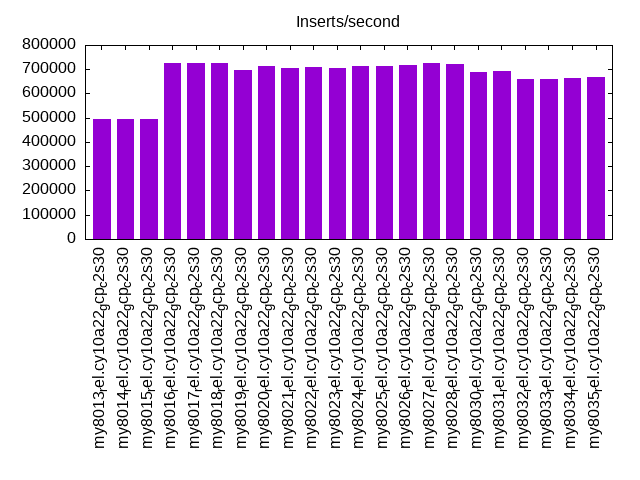
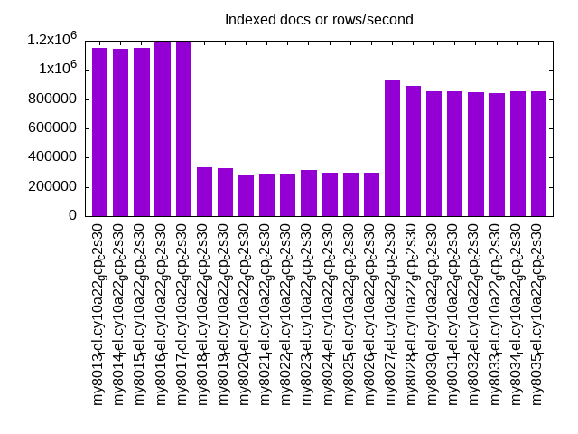
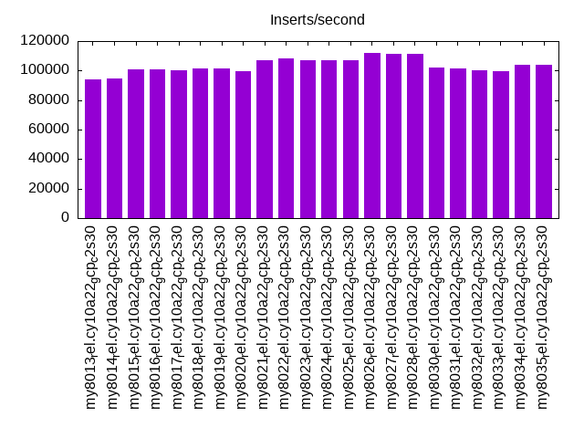
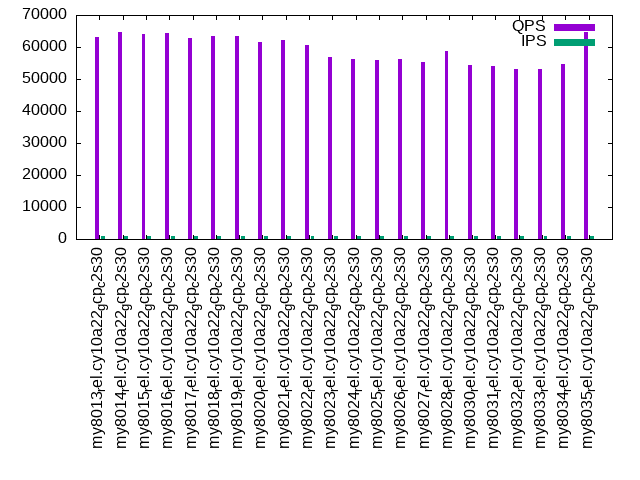
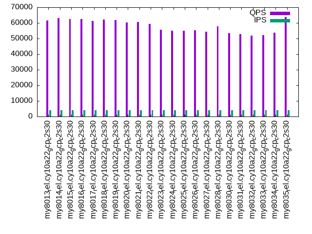
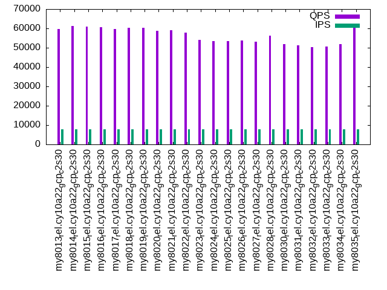

This is a report for the insert benchmark with 160M docs and 8 client(s). It is generated by scripts (bash, awk, sed) and Tufte might not be impressed. An overview of the insert benchmark is here and a short update is here. Below, by DBMS, I mean DBMS+version.config. An example is my8020.c10b40 where my means MySQL, 8020 is version 8.0.20 and c10b40 is the name for the configuration file.
The test server is a c2-standard-30 from GCP with 15 cores, hyperthreads disabled, 120G RAM, XFS + SW RAID 0 on 4 NVMe devices (1.5TB). The benchmark was run with 8 client and there were 1 or 3 connections per client (1 for queries or inserts without rate limits, 1+1 for rate limited inserts+deletes). There are 8 tables, client per table. It loads 20M rows per table without secondary indexes, creates secondary indexes, then inserts 100M rows with a delete per insert to avoid growing the table. It then does 3 read+write tests for 1800s each that do queries as fast as possible with 100, 500 and then 1000 inserts/second/client concurrent with the queries and 1000 deletes/second to avoid growing the table. The database is larger than memory.
The tested DBMS are:
The numbers are inserts/s for l.i0 and l.i1, indexed docs (or rows) /s for l.x and queries/s for q100, q500, q1000. The values are the average rate over the entire test for inserts (IPS) and queries (QPS). The range of values for IPS and QPS is split into 3 parts: bottom 25%, middle 50%, top 25%. Values in the bottom 25% have a red background, values in the top 25% have a green background and values in the middle have no color. A gray background is used for values that can be ignored because the DBMS did not sustain the target insert rate. Red backgrounds are not used when the minimum value is within 80% of the max value.
| dbms | l.i0 | l.x | l.i1 | q100.1 | q500.1 | q1000.1 |
|---|---|---|---|---|---|---|
| my8013_rel.cy10a22_gcp_c2s30 | 496894 | 1151798 | 94173 | 63159 | 61622 | 59775 |
| my8014_rel.cy10a22_gcp_c2s30 | 495356 | 1143571 | 94607 | 64683 | 63002 | 61265 |
| my8015_rel.cy10a22_gcp_c2s30 | 496894 | 1151798 | 100616 | 64122 | 62576 | 60996 |
| my8016_rel.cy10a22_gcp_c2s30 | 723982 | 1194776 | 100946 | 64262 | 62572 | 60761 |
| my8017_rel.cy10a22_gcp_c2s30 | 727273 | 1194776 | 100490 | 62805 | 61396 | 59652 |
| my8018_rel.cy10a22_gcp_c2s30 | 723982 | 335639 | 101138 | 63478 | 62175 | 60465 |
| my8019_rel.cy10a22_gcp_c2s30 | 698690 | 326069 | 101266 | 63284 | 61881 | 60261 |
| my8020_rel.cy10a22_gcp_c2s30 | 714286 | 280385 | 99776 | 61667 | 60346 | 58776 |
| my8021_rel.cy10a22_gcp_c2s30 | 704846 | 293223 | 106980 | 62144 | 60716 | 59134 |
| my8022_rel.cy10a22_gcp_c2s30 | 707965 | 293223 | 108357 | 60520 | 59493 | 57894 |
| my8023_rel.cy10a22_gcp_c2s30 | 704846 | 317030 | 107152 | 56804 | 55506 | 54098 |
| my8024_rel.cy10a22_gcp_c2s30 | 714286 | 297584 | 107224 | 56251 | 55077 | 53575 |
| my8025_rel.cy10a22_gcp_c2s30 | 714286 | 297584 | 107152 | 56002 | 54895 | 53473 |
| my8026_rel.cy10a22_gcp_c2s30 | 717489 | 299813 | 111810 | 56290 | 55268 | 53782 |
| my8027_rel.cy10a22_gcp_c2s30 | 723982 | 930814 | 111358 | 55296 | 54338 | 53020 |
| my8028_rel.cy10a22_gcp_c2s30 | 720721 | 889444 | 111142 | 58837 | 57734 | 56250 |
| my8030_rel.cy10a22_gcp_c2s30 | 689655 | 851596 | 101833 | 54464 | 53378 | 51782 |
| my8031_rel.cy10a22_gcp_c2s30 | 692641 | 851596 | 101510 | 53958 | 52878 | 51315 |
| my8032_rel.cy10a22_gcp_c2s30 | 661157 | 847090 | 100226 | 52978 | 51914 | 50393 |
| my8033_rel.cy10a22_gcp_c2s30 | 661157 | 842632 | 99763 | 53213 | 52194 | 50637 |
| my8034_rel.cy10a22_gcp_c2s30 | 663900 | 856150 | 104126 | 54755 | 53796 | 52025 |
| my8035_rel.cy10a22_gcp_c2s30 | 669456 | 856150 | 104126 | 64764 | 63666 | 61613 |
This table has relative throughput, throughput for the DBMS relative to the DBMS in the first line, using the absolute throughput from the previous table. Values less than 0.95 have a yellow background. Values greater than 1.05 have a blue background.
| dbms | l.i0 | l.x | l.i1 | q100.1 | q500.1 | q1000.1 |
|---|---|---|---|---|---|---|
| my8013_rel.cy10a22_gcp_c2s30 | 1.00 | 1.00 | 1.00 | 1.00 | 1.00 | 1.00 |
| my8014_rel.cy10a22_gcp_c2s30 | 1.00 | 0.99 | 1.00 | 1.02 | 1.02 | 1.02 |
| my8015_rel.cy10a22_gcp_c2s30 | 1.00 | 1.00 | 1.07 | 1.02 | 1.02 | 1.02 |
| my8016_rel.cy10a22_gcp_c2s30 | 1.46 | 1.04 | 1.07 | 1.02 | 1.02 | 1.02 |
| my8017_rel.cy10a22_gcp_c2s30 | 1.46 | 1.04 | 1.07 | 0.99 | 1.00 | 1.00 |
| my8018_rel.cy10a22_gcp_c2s30 | 1.46 | 0.29 | 1.07 | 1.01 | 1.01 | 1.01 |
| my8019_rel.cy10a22_gcp_c2s30 | 1.41 | 0.28 | 1.08 | 1.00 | 1.00 | 1.01 |
| my8020_rel.cy10a22_gcp_c2s30 | 1.44 | 0.24 | 1.06 | 0.98 | 0.98 | 0.98 |
| my8021_rel.cy10a22_gcp_c2s30 | 1.42 | 0.25 | 1.14 | 0.98 | 0.99 | 0.99 |
| my8022_rel.cy10a22_gcp_c2s30 | 1.42 | 0.25 | 1.15 | 0.96 | 0.97 | 0.97 |
| my8023_rel.cy10a22_gcp_c2s30 | 1.42 | 0.28 | 1.14 | 0.90 | 0.90 | 0.91 |
| my8024_rel.cy10a22_gcp_c2s30 | 1.44 | 0.26 | 1.14 | 0.89 | 0.89 | 0.90 |
| my8025_rel.cy10a22_gcp_c2s30 | 1.44 | 0.26 | 1.14 | 0.89 | 0.89 | 0.89 |
| my8026_rel.cy10a22_gcp_c2s30 | 1.44 | 0.26 | 1.19 | 0.89 | 0.90 | 0.90 |
| my8027_rel.cy10a22_gcp_c2s30 | 1.46 | 0.81 | 1.18 | 0.88 | 0.88 | 0.89 |
| my8028_rel.cy10a22_gcp_c2s30 | 1.45 | 0.77 | 1.18 | 0.93 | 0.94 | 0.94 |
| my8030_rel.cy10a22_gcp_c2s30 | 1.39 | 0.74 | 1.08 | 0.86 | 0.87 | 0.87 |
| my8031_rel.cy10a22_gcp_c2s30 | 1.39 | 0.74 | 1.08 | 0.85 | 0.86 | 0.86 |
| my8032_rel.cy10a22_gcp_c2s30 | 1.33 | 0.74 | 1.06 | 0.84 | 0.84 | 0.84 |
| my8033_rel.cy10a22_gcp_c2s30 | 1.33 | 0.73 | 1.06 | 0.84 | 0.85 | 0.85 |
| my8034_rel.cy10a22_gcp_c2s30 | 1.34 | 0.74 | 1.11 | 0.87 | 0.87 | 0.87 |
| my8035_rel.cy10a22_gcp_c2s30 | 1.35 | 0.74 | 1.11 | 1.03 | 1.03 | 1.03 |
This lists the average rate of inserts/s for the tests that do inserts concurrent with queries. For such tests the query rate is listed in the table above. The read+write tests are setup so that the insert rate should match the target rate every second. Cells that are not at least 95% of the target have a red background to indicate a failure to satisfy the target.
| dbms | q100.1 | q500.1 | q1000.1 |
|---|---|---|---|
| my8013_rel.cy10a22_gcp_c2s30 | 796 | 3978 | 7960 |
| my8014_rel.cy10a22_gcp_c2s30 | 796 | 3978 | 7965 |
| my8015_rel.cy10a22_gcp_c2s30 | 796 | 3978 | 7960 |
| my8016_rel.cy10a22_gcp_c2s30 | 796 | 3978 | 7960 |
| my8017_rel.cy10a22_gcp_c2s30 | 796 | 3980 | 7965 |
| my8018_rel.cy10a22_gcp_c2s30 | 796 | 3978 | 7960 |
| my8019_rel.cy10a22_gcp_c2s30 | 796 | 3978 | 7960 |
| my8020_rel.cy10a22_gcp_c2s30 | 796 | 3978 | 7960 |
| my8021_rel.cy10a22_gcp_c2s30 | 796 | 3978 | 7960 |
| my8022_rel.cy10a22_gcp_c2s30 | 796 | 3978 | 7960 |
| my8023_rel.cy10a22_gcp_c2s30 | 796 | 3978 | 7960 |
| my8024_rel.cy10a22_gcp_c2s30 | 796 | 3978 | 7960 |
| my8025_rel.cy10a22_gcp_c2s30 | 796 | 3978 | 7960 |
| my8026_rel.cy10a22_gcp_c2s30 | 796 | 3978 | 7960 |
| my8027_rel.cy10a22_gcp_c2s30 | 796 | 3978 | 7960 |
| my8028_rel.cy10a22_gcp_c2s30 | 796 | 3978 | 7960 |
| my8030_rel.cy10a22_gcp_c2s30 | 796 | 3978 | 7960 |
| my8031_rel.cy10a22_gcp_c2s30 | 796 | 3978 | 7960 |
| my8032_rel.cy10a22_gcp_c2s30 | 796 | 3978 | 7960 |
| my8033_rel.cy10a22_gcp_c2s30 | 796 | 3978 | 7960 |
| my8034_rel.cy10a22_gcp_c2s30 | 796 | 3978 | 7960 |
| my8035_rel.cy10a22_gcp_c2s30 | 796 | 3978 | 7960 |
| target | 800 | 4000 | 8000 |
l.i0: load without secondary indexes. Graphs for performance per 1-second interval are here.
Average throughput:
Insert response time histogram: each cell has the percentage of responses that take <= the time in the header and max is the max response time in seconds. For the max column values in the top 25% of the range have a red background and in the bottom 25% of the range have a green background. The red background is not used when the min value is within 80% of the max value.
| dbms | 256us | 1ms | 4ms | 16ms | 64ms | 256ms | 1s | 4s | 16s | gt | max |
|---|---|---|---|---|---|---|---|---|---|---|---|
| my8013_rel.cy10a22_gcp_c2s30 | 69.730 | 27.349 | 2.870 | 0.036 | 0.014 | 0.232 | |||||
| my8014_rel.cy10a22_gcp_c2s30 | 66.837 | 31.123 | 1.992 | 0.033 | 0.015 | 0.250 | |||||
| my8015_rel.cy10a22_gcp_c2s30 | 68.171 | 29.302 | 2.480 | 0.031 | 0.015 | 0.207 | |||||
| my8016_rel.cy10a22_gcp_c2s30 | 86.047 | 13.853 | 0.058 | 0.027 | 0.015 | 0.242 | |||||
| my8017_rel.cy10a22_gcp_c2s30 | 87.355 | 12.548 | 0.056 | 0.026 | 0.015 | 0.001 | 0.266 | ||||
| my8018_rel.cy10a22_gcp_c2s30 | 85.601 | 14.303 | 0.058 | 0.024 | 0.015 | 0.219 | |||||
| my8019_rel.cy10a22_gcp_c2s30 | 71.610 | 28.309 | 0.046 | 0.021 | 0.015 | 0.237 | |||||
| my8020_rel.cy10a22_gcp_c2s30 | 85.339 | 14.578 | 0.046 | 0.022 | 0.015 | 0.248 | |||||
| my8021_rel.cy10a22_gcp_c2s30 | 78.087 | 21.829 | 0.051 | 0.019 | 0.015 | 0.230 | |||||
| my8022_rel.cy10a22_gcp_c2s30 | 83.708 | 16.086 | 0.145 | 0.046 | 0.015 | 0.205 | |||||
| my8023_rel.cy10a22_gcp_c2s30 | 81.346 | 18.450 | 0.144 | 0.046 | 0.015 | 0.221 | |||||
| my8024_rel.cy10a22_gcp_c2s30 | 81.757 | 18.178 | 0.036 | 0.013 | 0.015 | 0.223 | |||||
| my8025_rel.cy10a22_gcp_c2s30 | 81.523 | 18.417 | 0.033 | 0.013 | 0.015 | 0.238 | |||||
| my8026_rel.cy10a22_gcp_c2s30 | 82.397 | 17.544 | 0.031 | 0.013 | 0.015 | 0.228 | |||||
| my8027_rel.cy10a22_gcp_c2s30 | 88.288 | 11.649 | 0.033 | 0.015 | 0.015 | 0.240 | |||||
| my8028_rel.cy10a22_gcp_c2s30 | 90.933 | 8.994 | 0.044 | 0.012 | 0.016 | nonzero | 0.257 | ||||
| my8030_rel.cy10a22_gcp_c2s30 | 48.686 | 51.233 | 0.053 | 0.013 | 0.014 | 0.226 | |||||
| my8031_rel.cy10a22_gcp_c2s30 | 41.844 | 58.088 | 0.038 | 0.016 | 0.014 | 0.246 | |||||
| my8032_rel.cy10a22_gcp_c2s30 | 7.102 | 92.819 | 0.036 | 0.028 | 0.014 | 0.225 | |||||
| my8033_rel.cy10a22_gcp_c2s30 | 7.772 | 92.136 | 0.047 | 0.030 | 0.015 | 0.250 | |||||
| my8034_rel.cy10a22_gcp_c2s30 | 8.614 | 91.299 | 0.042 | 0.031 | 0.014 | 0.254 | |||||
| my8035_rel.cy10a22_gcp_c2s30 | 12.945 | 86.980 | 0.040 | 0.020 | 0.014 | nonzero | 0.262 |
Performance metrics for the DBMS listed above. Some are normalized by throughput, others are not. Legend for results is here.
ips qps rps rmbps wps wmbps rpq rkbpq wpi wkbpi csps cpups cspq cpupq dbgb1 dbgb2 rss maxop p50 p99 tag 496894 0 3258 12.7 949.0 99.1 0.007 0.026 0.002 0.204 142061 52.5 0.286 16 10.6 139.1 16.2 0.232 83310 22975 160m.my8013_rel.cy10a22_gcp_c2s30 495356 0 3239 12.7 956.1 98.8 0.007 0.026 0.002 0.204 132868 53.8 0.268 16 10.6 139.1 16.1 0.250 80912 22476 160m.my8014_rel.cy10a22_gcp_c2s30 496894 0 3228 12.6 961.0 101.0 0.006 0.026 0.002 0.208 132306 53.6 0.266 16 10.6 139.1 16.2 0.207 79541 22776 160m.my8015_rel.cy10a22_gcp_c2s30 723982 0 0 0.0 1453.9 151.0 0.000 0.000 0.002 0.214 196409 75.7 0.271 16 10.6 139.1 16.8 0.242 98695 78216 160m.my8016_rel.cy10a22_gcp_c2s30 727273 0 0 0.0 1457.2 146.1 0.000 0.000 0.002 0.206 194543 75.3 0.267 16 10.6 139.1 16.8 0.266 99825 78613 160m.my8017_rel.cy10a22_gcp_c2s30 723982 0 0 0.0 1448.8 149.6 0.000 0.000 0.002 0.212 194980 76.1 0.269 16 10.6 139.1 16.8 0.219 99094 79215 160m.my8018_rel.cy10a22_gcp_c2s30 698690 0 0 0.0 1404.7 145.2 0.000 0.000 0.002 0.213 242937 73.8 0.348 16 10.6 139.1 16.5 0.237 95864 74819 160m.my8019_rel.cy10a22_gcp_c2s30 714286 0 0 0.0 1499.4 147.3 0.000 0.000 0.002 0.211 246201 74.0 0.345 16 10.6 139.1 16.7 0.248 98394 77015 160m.my8020_rel.cy10a22_gcp_c2s30 704846 0 0 0.0 1493.5 144.9 0.000 0.000 0.002 0.211 238514 73.5 0.338 16 10.6 139.1 16.5 0.230 97095 76475 160m.my8021_rel.cy10a22_gcp_c2s30 707965 0 0 0.0 1515.1 143.1 0.000 0.000 0.002 0.207 228935 72.8 0.323 15 10.6 139.1 16.5 0.205 97195 77037 160m.my8022_rel.cy10a22_gcp_c2s30 704846 0 0 0.0 1534.1 143.7 0.000 0.000 0.002 0.209 231172 73.0 0.328 16 10.6 139.1 16.3 0.221 96596 78093 160m.my8023_rel.cy10a22_gcp_c2s30 714286 0 0 0.0 1494.3 146.2 0.000 0.000 0.002 0.210 248606 73.9 0.348 16 10.6 139.1 16.4 0.223 98026 76142 160m.my8024_rel.cy10a22_gcp_c2s30 714286 0 0 0.0 1493.2 144.9 0.000 0.000 0.002 0.208 246395 73.9 0.345 16 10.6 139.1 16.4 0.238 97895 76125 160m.my8025_rel.cy10a22_gcp_c2s30 717489 0 0 0.0 1492.5 146.8 0.000 0.000 0.002 0.210 244375 74.0 0.341 15 10.6 139.1 16.4 0.228 98393 76941 160m.my8026_rel.cy10a22_gcp_c2s30 723982 0 0 0.0 1508.5 146.0 0.000 0.000 0.002 0.207 245877 73.7 0.340 15 10.6 139.1 16.5 0.240 99293 75917 160m.my8027_rel.cy10a22_gcp_c2s30 720721 0 0 0.0 1522.4 145.5 0.000 0.000 0.002 0.207 244177 73.2 0.339 15 10.6 139.1 16.7 0.257 100292 78434 160m.my8028_rel.cy10a22_gcp_c2s30 689655 0 0 0.0 1136.4 129.3 0.000 0.000 0.002 0.192 237446 73.0 0.344 16 10.6 139.1 16.2 0.226 94898 75844 160m.my8030_rel.cy10a22_gcp_c2s30 692641 0 0 0.0 1133.0 130.4 0.000 0.000 0.002 0.193 233321 73.2 0.337 16 10.6 139.1 16.2 0.246 94698 73921 160m.my8031_rel.cy10a22_gcp_c2s30 661157 0 0 0.0 1101.1 127.0 0.000 0.000 0.002 0.197 202106 73.0 0.306 17 10.6 139.1 17.1 0.225 90303 71151 160m.my8032_rel.cy10a22_gcp_c2s30 661157 0 0 0.0 1102.4 126.1 0.000 0.000 0.002 0.195 194745 73.0 0.295 17 10.6 139.1 17.1 0.250 90202 73921 160m.my8033_rel.cy10a22_gcp_c2s30 663900 0 0 0.0 1486.3 136.1 0.000 0.000 0.002 0.210 204536 72.9 0.308 16 10.6 139.1 17.1 0.254 90601 69748 160m.my8034_rel.cy10a22_gcp_c2s30 669456 0 0 0.0 1486.7 135.4 0.000 0.000 0.002 0.207 222537 73.3 0.332 16 10.6 139.1 17.2 0.262 91601 71545 160m.my8035_rel.cy10a22_gcp_c2s30
l.x: create secondary indexes.
Average throughput:
Performance metrics for the DBMS listed above. Some are normalized by throughput, others are not. Legend for results is here.
ips qps rps rmbps wps wmbps rpq rkbpq wpi wkbpi csps cpups cspq cpupq dbgb1 dbgb2 rss maxop p50 p99 tag 1151798 0 0 0.0 13476.9 1052.3 0.000 0.000 0.012 0.936 72116 40.5 0.063 5 23.5 152.1 24.8 0.003 NA NA 160m.my8013_rel.cy10a22_gcp_c2s30 1143571 0 0 0.0 14045.3 1028.7 0.000 0.000 0.012 0.921 72491 38.5 0.063 5 23.5 152.1 24.7 0.002 NA NA 160m.my8014_rel.cy10a22_gcp_c2s30 1151798 0 0 0.0 13453.3 1050.7 0.000 0.000 0.012 0.934 68748 38.6 0.060 5 23.5 152.1 24.7 0.002 NA NA 160m.my8015_rel.cy10a22_gcp_c2s30 1194776 0 0 0.0 12849.9 1083.8 0.000 0.000 0.011 0.929 43444 38.8 0.036 5 23.5 152.1 25.7 0.003 NA NA 160m.my8016_rel.cy10a22_gcp_c2s30 1194776 0 0 0.0 12831.0 1083.3 0.000 0.000 0.011 0.928 46394 38.7 0.039 5 23.5 152.1 25.5 0.002 NA NA 160m.my8017_rel.cy10a22_gcp_c2s30 335639 0 0 0.0 3805.6 278.8 0.000 0.000 0.011 0.850 106832 44.2 0.318 20 23.5 152.1 28.8 0.002 NA NA 160m.my8018_rel.cy10a22_gcp_c2s30 326069 0 0 0.0 3697.3 270.0 0.000 0.000 0.011 0.848 107854 43.6 0.331 20 23.5 152.1 28.8 0.002 NA NA 160m.my8019_rel.cy10a22_gcp_c2s30 280385 0 2 0.0 3202.8 232.4 0.000 0.000 0.011 0.849 104273 40.4 0.372 22 23.5 152.1 21.0 0.002 NA NA 160m.my8020_rel.cy10a22_gcp_c2s30 293223 0 2 0.0 3344.2 242.8 0.000 0.000 0.011 0.848 106090 41.0 0.362 21 23.5 152.1 21.0 0.002 NA NA 160m.my8021_rel.cy10a22_gcp_c2s30 293223 0 2 0.0 3365.6 243.0 0.000 0.000 0.011 0.848 103222 40.3 0.352 21 23.5 152.1 20.9 0.002 NA NA 160m.my8022_rel.cy10a22_gcp_c2s30 317030 0 3 0.1 3628.6 262.0 0.000 0.000 0.011 0.846 98866 42.7 0.312 20 23.5 152.1 20.7 0.002 NA NA 160m.my8023_rel.cy10a22_gcp_c2s30 297584 0 2 0.0 3403.3 247.4 0.000 0.000 0.011 0.851 100153 41.1 0.337 21 23.5 152.1 20.7 0.002 NA NA 160m.my8024_rel.cy10a22_gcp_c2s30 297584 0 2 0.0 3405.6 247.4 0.000 0.000 0.011 0.851 93750 39.6 0.315 20 23.5 152.1 20.7 0.002 NA NA 160m.my8025_rel.cy10a22_gcp_c2s30 299813 0 3 0.0 3416.1 247.6 0.000 0.000 0.011 0.846 95722 41.1 0.319 21 23.5 152.1 20.9 0.002 NA NA 160m.my8026_rel.cy10a22_gcp_c2s30 930814 0 4711 299.6 18953.5 916.1 0.005 0.330 0.020 1.008 109584 78.8 0.118 13 23.5 152.1 25.6 0.003 NA NA 160m.my8027_rel.cy10a22_gcp_c2s30 889444 0 4452 283.0 18209.9 871.2 0.005 0.326 0.020 1.003 150628 79.3 0.169 13 23.5 152.1 26.6 0.003 NA NA 160m.my8028_rel.cy10a22_gcp_c2s30 851596 0 4330 275.2 17426.5 840.6 0.005 0.331 0.020 1.011 110390 83.5 0.130 15 23.5 152.1 26.8 0.004 NA NA 160m.my8030_rel.cy10a22_gcp_c2s30 851596 0 4331 275.3 17512.7 844.2 0.005 0.331 0.021 1.015 101427 81.1 0.119 14 23.5 152.1 25.1 0.003 NA NA 160m.my8031_rel.cy10a22_gcp_c2s30 847090 0 4327 275.2 17309.1 840.3 0.005 0.333 0.020 1.016 115156 83.8 0.136 15 23.5 152.1 26.1 0.005 NA NA 160m.my8032_rel.cy10a22_gcp_c2s30 842632 0 4221 268.2 17211.6 824.9 0.005 0.326 0.020 1.002 108684 84.2 0.129 15 23.5 152.1 26.4 0.015 NA NA 160m.my8033_rel.cy10a22_gcp_c2s30 856150 0 4330 275.4 17524.1 844.9 0.005 0.329 0.020 1.011 80137 83.6 0.094 15 23.5 152.1 25.8 0.004 NA NA 160m.my8034_rel.cy10a22_gcp_c2s30 856150 0 4332 275.2 17539.5 843.7 0.005 0.329 0.020 1.009 83709 84.5 0.098 15 23.5 152.1 26.1 0.004 NA NA 160m.my8035_rel.cy10a22_gcp_c2s30
l.i1: continue load after secondary indexes created. Graphs for performance per 1-second interval are here.
Average throughput:
Insert response time histogram: each cell has the percentage of responses that take <= the time in the header and max is the max response time in seconds. For the max column values in the top 25% of the range have a red background and in the bottom 25% of the range have a green background. The red background is not used when the min value is within 80% of the max value.
| dbms | 256us | 1ms | 4ms | 16ms | 64ms | 256ms | 1s | 4s | 16s | gt | max |
|---|---|---|---|---|---|---|---|---|---|---|---|
| my8013_rel.cy10a22_gcp_c2s30 | 55.761 | 43.994 | 0.229 | 0.016 | nonzero | 0.490 | |||||
| my8014_rel.cy10a22_gcp_c2s30 | 56.134 | 43.626 | 0.223 | 0.016 | nonzero | 0.520 | |||||
| my8015_rel.cy10a22_gcp_c2s30 | 62.894 | 36.881 | 0.209 | 0.016 | nonzero | 0.430 | |||||
| my8016_rel.cy10a22_gcp_c2s30 | 63.131 | 36.642 | 0.211 | 0.016 | nonzero | 0.293 | |||||
| my8017_rel.cy10a22_gcp_c2s30 | 62.550 | 37.227 | 0.207 | 0.016 | nonzero | 0.339 | |||||
| my8018_rel.cy10a22_gcp_c2s30 | 63.327 | 36.451 | 0.205 | 0.016 | nonzero | 0.433 | |||||
| my8019_rel.cy10a22_gcp_c2s30 | 63.289 | 36.494 | 0.200 | 0.017 | nonzero | 0.469 | |||||
| my8020_rel.cy10a22_gcp_c2s30 | 61.392 | 38.416 | 0.170 | 0.019 | 0.002 | 0.434 | |||||
| my8021_rel.cy10a22_gcp_c2s30 | 69.104 | 30.714 | 0.160 | 0.019 | 0.003 | 0.383 | |||||
| my8022_rel.cy10a22_gcp_c2s30 | 70.592 | 29.224 | 0.162 | 0.019 | 0.003 | 0.393 | |||||
| my8023_rel.cy10a22_gcp_c2s30 | 69.447 | 30.358 | 0.174 | 0.017 | 0.004 | 0.395 | |||||
| my8024_rel.cy10a22_gcp_c2s30 | 69.478 | 30.338 | 0.164 | 0.018 | 0.003 | 0.518 | |||||
| my8025_rel.cy10a22_gcp_c2s30 | 69.362 | 30.453 | 0.164 | 0.017 | 0.004 | 0.427 | |||||
| my8026_rel.cy10a22_gcp_c2s30 | 73.509 | 26.323 | 0.147 | 0.018 | 0.004 | 0.360 | |||||
| my8027_rel.cy10a22_gcp_c2s30 | 73.122 | 26.703 | 0.153 | 0.018 | 0.004 | 0.447 | |||||
| my8028_rel.cy10a22_gcp_c2s30 | 73.017 | 26.815 | 0.148 | 0.017 | 0.003 | 0.514 | |||||
| my8030_rel.cy10a22_gcp_c2s30 | 64.551 | 35.237 | 0.189 | 0.019 | 0.004 | 0.452 | |||||
| my8031_rel.cy10a22_gcp_c2s30 | 64.144 | 35.640 | 0.193 | 0.018 | 0.004 | 0.553 | |||||
| my8032_rel.cy10a22_gcp_c2s30 | 62.434 | 37.371 | 0.173 | 0.019 | 0.003 | 0.423 | |||||
| my8033_rel.cy10a22_gcp_c2s30 | 61.930 | 37.873 | 0.175 | 0.020 | 0.003 | 0.406 | |||||
| my8034_rel.cy10a22_gcp_c2s30 | 67.115 | 32.664 | 0.198 | 0.019 | 0.003 | 0.396 | |||||
| my8035_rel.cy10a22_gcp_c2s30 | 67.145 | 32.632 | 0.200 | 0.020 | 0.003 | 0.475 |
Delete response time histogram: each cell has the percentage of responses that take <= the time in the header and max is the max response time in seconds. For the max column values in the top 25% of the range have a red background and in the bottom 25% of the range have a green background. The red background is not used when the min value is within 80% of the max value.
| dbms | 256us | 1ms | 4ms | 16ms | 64ms | 256ms | 1s | 4s | 16s | gt | max |
|---|---|---|---|---|---|---|---|---|---|---|---|
| my8013_rel.cy10a22_gcp_c2s30 | 68.812 | 31.009 | 0.164 | 0.014 | nonzero | 0.488 | |||||
| my8014_rel.cy10a22_gcp_c2s30 | 68.702 | 31.118 | 0.165 | 0.014 | nonzero | 0.521 | |||||
| my8015_rel.cy10a22_gcp_c2s30 | 73.915 | 25.914 | 0.157 | 0.014 | nonzero | 0.278 | |||||
| my8016_rel.cy10a22_gcp_c2s30 | nonzero | 74.573 | 25.260 | 0.153 | 0.014 | nonzero | 0.280 | ||||
| my8017_rel.cy10a22_gcp_c2s30 | 73.046 | 26.783 | 0.157 | 0.013 | nonzero | 0.279 | |||||
| my8018_rel.cy10a22_gcp_c2s30 | nonzero | 74.582 | 25.253 | 0.151 | 0.014 | nonzero | 0.269 | ||||
| my8019_rel.cy10a22_gcp_c2s30 | 73.485 | 26.344 | 0.157 | 0.014 | nonzero | 0.381 | |||||
| my8020_rel.cy10a22_gcp_c2s30 | 72.541 | 27.320 | 0.125 | 0.012 | 0.002 | 0.433 | |||||
| my8021_rel.cy10a22_gcp_c2s30 | 77.927 | 21.940 | 0.118 | 0.012 | 0.003 | 0.412 | |||||
| my8022_rel.cy10a22_gcp_c2s30 | 78.946 | 20.920 | 0.118 | 0.012 | 0.003 | 0.396 | |||||
| my8023_rel.cy10a22_gcp_c2s30 | 78.483 | 21.375 | 0.127 | 0.012 | 0.003 | 0.458 | |||||
| my8024_rel.cy10a22_gcp_c2s30 | 78.388 | 21.477 | 0.120 | 0.012 | 0.003 | 0.484 | |||||
| my8025_rel.cy10a22_gcp_c2s30 | 78.533 | 21.333 | 0.120 | 0.012 | 0.003 | 0.430 | |||||
| my8026_rel.cy10a22_gcp_c2s30 | 81.646 | 18.232 | 0.107 | 0.012 | 0.003 | 0.363 | |||||
| my8027_rel.cy10a22_gcp_c2s30 | 81.038 | 18.834 | 0.113 | 0.012 | 0.003 | 0.451 | |||||
| my8028_rel.cy10a22_gcp_c2s30 | 80.408 | 19.466 | 0.111 | 0.012 | 0.003 | 0.535 | |||||
| my8030_rel.cy10a22_gcp_c2s30 | 74.402 | 25.446 | 0.136 | 0.012 | 0.004 | 0.449 | |||||
| my8031_rel.cy10a22_gcp_c2s30 | 74.452 | 25.395 | 0.138 | 0.012 | 0.003 | 0.535 | |||||
| my8032_rel.cy10a22_gcp_c2s30 | 73.374 | 26.486 | 0.124 | 0.012 | 0.003 | 0.416 | |||||
| my8033_rel.cy10a22_gcp_c2s30 | 72.744 | 27.116 | 0.125 | 0.013 | 0.002 | 0.403 | |||||
| my8034_rel.cy10a22_gcp_c2s30 | 75.761 | 24.079 | 0.145 | 0.013 | 0.003 | 0.399 | |||||
| my8035_rel.cy10a22_gcp_c2s30 | 76.013 | 23.825 | 0.146 | 0.013 | 0.003 | 0.479 |
Performance metrics for the DBMS listed above. Some are normalized by throughput, others are not. Legend for results is here.
ips qps rps rmbps wps wmbps rpq rkbpq wpi wkbpi csps cpups cspq cpupq dbgb1 dbgb2 rss maxop p50 p99 tag 94173 0 0 0.0 4905.6 199.5 0.000 0.000 0.052 2.170 177512 84.5 1.885 135 35.7 164.7 42.5 0.490 11887 9090 160m.my8013_rel.cy10a22_gcp_c2s30 94607 0 0 0.0 4936.4 200.4 0.000 0.000 0.052 2.169 187820 84.8 1.985 134 35.8 164.8 42.6 0.520 11887 9343 160m.my8014_rel.cy10a22_gcp_c2s30 100616 0 0 0.0 5168.8 210.7 0.000 0.000 0.051 2.145 180403 84.4 1.793 126 35.9 164.9 42.7 0.430 12686 9839 160m.my8015_rel.cy10a22_gcp_c2s30 100946 0 0 0.0 5183.4 210.9 0.000 0.000 0.051 2.140 183226 84.3 1.815 125 35.7 164.8 42.6 0.293 12747 9789 160m.my8016_rel.cy10a22_gcp_c2s30 100490 0 0 0.0 5154.9 210.4 0.000 0.000 0.051 2.144 182429 84.4 1.815 126 35.6 164.7 42.4 0.339 12686 9941 160m.my8017_rel.cy10a22_gcp_c2s30 101138 0 0 0.0 5168.3 210.7 0.000 0.000 0.051 2.134 183078 84.3 1.810 125 35.7 164.8 42.5 0.433 12786 9789 160m.my8018_rel.cy10a22_gcp_c2s30 101266 0 0 0.0 5130.4 210.3 0.000 0.000 0.051 2.127 158027 84.9 1.561 126 35.6 164.6 42.3 0.469 12793 9544 160m.my8019_rel.cy10a22_gcp_c2s30 99776 0 92 1.4 5458.7 206.5 0.001 0.015 0.055 2.119 159875 84.8 1.602 127 35.3 164.3 42.1 0.434 12686 9096 160m.my8020_rel.cy10a22_gcp_c2s30 106980 0 98 1.5 5739.7 218.7 0.001 0.015 0.054 2.094 169760 84.5 1.587 118 34.6 163.6 41.4 0.383 13644 9090 160m.my8021_rel.cy10a22_gcp_c2s30 108357 0 100 1.6 5794.7 221.5 0.001 0.015 0.053 2.093 166620 84.8 1.538 117 34.9 163.8 41.6 0.393 13785 9190 160m.my8022_rel.cy10a22_gcp_c2s30 107152 0 98 1.5 5744.2 219.2 0.001 0.015 0.054 2.095 167475 84.8 1.563 119 34.9 163.9 41.4 0.395 13640 9240 160m.my8023_rel.cy10a22_gcp_c2s30 107224 0 98 1.5 5757.0 218.8 0.001 0.015 0.054 2.090 168252 84.6 1.569 118 35.1 164.2 41.7 0.518 13640 9197 160m.my8024_rel.cy10a22_gcp_c2s30 107152 0 98 1.5 5752.3 218.5 0.001 0.015 0.054 2.088 167862 84.7 1.567 119 35.3 164.3 41.8 0.427 13635 9539 160m.my8025_rel.cy10a22_gcp_c2s30 111810 0 103 1.6 5905.7 226.0 0.001 0.015 0.053 2.070 177544 83.9 1.588 113 34.9 163.9 41.7 0.360 14330 9793 160m.my8026_rel.cy10a22_gcp_c2s30 111358 0 102 1.6 5908.9 226.3 0.001 0.015 0.053 2.081 176246 84.1 1.583 113 34.7 163.7 41.4 0.447 14235 9540 160m.my8027_rel.cy10a22_gcp_c2s30 111142 0 102 1.6 5897.0 226.5 0.001 0.015 0.053 2.087 176014 84.1 1.584 114 33.8 162.7 40.6 0.514 14234 9485 160m.my8028_rel.cy10a22_gcp_c2s30 101833 0 94 1.5 6766.0 263.7 0.001 0.015 0.066 2.652 181104 84.4 1.778 124 32.6 161.4 39.3 0.452 13135 7184 160m.my8030_rel.cy10a22_gcp_c2s30 101510 0 93 1.5 6741.0 262.7 0.001 0.015 0.066 2.650 181240 84.4 1.785 125 32.2 160.9 38.9 0.553 13038 7142 160m.my8031_rel.cy10a22_gcp_c2s30 100226 0 92 1.4 6726.3 259.7 0.001 0.015 0.067 2.653 180156 84.6 1.798 127 34.1 163.0 40.9 0.423 12837 7945 160m.my8032_rel.cy10a22_gcp_c2s30 99763 0 92 1.4 6688.4 259.4 0.001 0.015 0.067 2.662 178360 84.8 1.788 128 33.3 162.2 40.1 0.406 12836 7593 160m.my8033_rel.cy10a22_gcp_c2s30 104126 0 96 1.5 6831.1 267.6 0.001 0.015 0.066 2.632 184087 84.2 1.768 121 31.8 160.5 38.5 0.396 13385 7345 160m.my8034_rel.cy10a22_gcp_c2s30 104126 0 96 1.5 6840.9 268.0 0.001 0.015 0.066 2.635 183625 84.2 1.763 121 32.2 160.9 38.9 0.475 13385 7142 160m.my8035_rel.cy10a22_gcp_c2s30
q100.1: range queries with 100 insert/s per client. Graphs for performance per 1-second interval are here.
Average throughput:
Query response time histogram: each cell has the percentage of responses that take <= the time in the header and max is the max response time in seconds. For max values in the top 25% of the range have a red background and in the bottom 25% of the range have a green background. The red background is not used when the min value is within 80% of the max value.
| dbms | 256us | 1ms | 4ms | 16ms | 64ms | 256ms | 1s | 4s | 16s | gt | max |
|---|---|---|---|---|---|---|---|---|---|---|---|
| my8013_rel.cy10a22_gcp_c2s30 | 99.879 | 0.117 | 0.004 | nonzero | nonzero | 0.019 | |||||
| my8014_rel.cy10a22_gcp_c2s30 | 99.909 | 0.087 | 0.004 | nonzero | 0.015 | ||||||
| my8015_rel.cy10a22_gcp_c2s30 | 99.906 | 0.090 | 0.004 | nonzero | 0.010 | ||||||
| my8016_rel.cy10a22_gcp_c2s30 | 99.908 | 0.088 | 0.004 | nonzero | 0.011 | ||||||
| my8017_rel.cy10a22_gcp_c2s30 | 99.893 | 0.104 | 0.004 | nonzero | 0.015 | ||||||
| my8018_rel.cy10a22_gcp_c2s30 | 99.898 | 0.098 | 0.004 | nonzero | 0.011 | ||||||
| my8019_rel.cy10a22_gcp_c2s30 | 99.897 | 0.099 | 0.004 | nonzero | 0.011 | ||||||
| my8020_rel.cy10a22_gcp_c2s30 | 99.876 | 0.120 | 0.004 | nonzero | 0.010 | ||||||
| my8021_rel.cy10a22_gcp_c2s30 | 99.887 | 0.111 | 0.002 | nonzero | 0.011 | ||||||
| my8022_rel.cy10a22_gcp_c2s30 | 99.877 | 0.121 | 0.002 | nonzero | 0.011 | ||||||
| my8023_rel.cy10a22_gcp_c2s30 | 99.840 | 0.158 | 0.002 | nonzero | 0.011 | ||||||
| my8024_rel.cy10a22_gcp_c2s30 | 99.840 | 0.158 | 0.002 | nonzero | 0.010 | ||||||
| my8025_rel.cy10a22_gcp_c2s30 | 99.824 | 0.174 | 0.002 | nonzero | 0.010 | ||||||
| my8026_rel.cy10a22_gcp_c2s30 | 99.836 | 0.162 | 0.002 | nonzero | 0.012 | ||||||
| my8027_rel.cy10a22_gcp_c2s30 | 99.829 | 0.169 | 0.002 | nonzero | 0.011 | ||||||
| my8028_rel.cy10a22_gcp_c2s30 | 99.859 | 0.139 | 0.002 | nonzero | 0.010 | ||||||
| my8030_rel.cy10a22_gcp_c2s30 | 99.798 | 0.199 | 0.002 | nonzero | 0.014 | ||||||
| my8031_rel.cy10a22_gcp_c2s30 | 99.789 | 0.209 | 0.002 | nonzero | 0.015 | ||||||
| my8032_rel.cy10a22_gcp_c2s30 | 99.761 | 0.237 | 0.002 | nonzero | 0.011 | ||||||
| my8033_rel.cy10a22_gcp_c2s30 | 99.758 | 0.240 | 0.002 | nonzero | 0.012 | ||||||
| my8034_rel.cy10a22_gcp_c2s30 | 99.807 | 0.191 | 0.002 | nonzero | 0.011 | ||||||
| my8035_rel.cy10a22_gcp_c2s30 | 99.885 | 0.113 | 0.002 | nonzero | 0.007 |
Insert response time histogram: each cell has the percentage of responses that take <= the time in the header and max is the max response time in seconds. For max values in the top 25% of the range have a red background and in the bottom 25% of the range have a green background. The red background is not used when the min value is within 80% of the max value.
| dbms | 256us | 1ms | 4ms | 16ms | 64ms | 256ms | 1s | 4s | 16s | gt | max |
|---|---|---|---|---|---|---|---|---|---|---|---|
| my8013_rel.cy10a22_gcp_c2s30 | 92.979 | 7.017 | 0.003 | 0.021 | |||||||
| my8014_rel.cy10a22_gcp_c2s30 | 84.062 | 15.934 | 0.003 | 0.017 | |||||||
| my8015_rel.cy10a22_gcp_c2s30 | 84.917 | 15.083 | 0.014 | ||||||||
| my8016_rel.cy10a22_gcp_c2s30 | 82.500 | 17.497 | 0.003 | 0.021 | |||||||
| my8017_rel.cy10a22_gcp_c2s30 | 86.347 | 13.649 | 0.003 | 0.019 | |||||||
| my8018_rel.cy10a22_gcp_c2s30 | 86.042 | 13.958 | 0.012 | ||||||||
| my8019_rel.cy10a22_gcp_c2s30 | 84.365 | 15.628 | 0.007 | 0.039 | |||||||
| my8020_rel.cy10a22_gcp_c2s30 | 86.125 | 13.875 | 0.013 | ||||||||
| my8021_rel.cy10a22_gcp_c2s30 | 95.406 | 4.594 | 0.016 | ||||||||
| my8022_rel.cy10a22_gcp_c2s30 | 94.844 | 5.156 | 0.015 | ||||||||
| my8023_rel.cy10a22_gcp_c2s30 | 93.562 | 6.438 | 0.014 | ||||||||
| my8024_rel.cy10a22_gcp_c2s30 | 93.965 | 6.035 | 0.015 | ||||||||
| my8025_rel.cy10a22_gcp_c2s30 | 93.830 | 6.163 | 0.007 | 0.017 | |||||||
| my8026_rel.cy10a22_gcp_c2s30 | 95.281 | 4.719 | 0.013 | ||||||||
| my8027_rel.cy10a22_gcp_c2s30 | 96.250 | 3.750 | 0.014 | ||||||||
| my8028_rel.cy10a22_gcp_c2s30 | 95.299 | 4.701 | 0.015 | ||||||||
| my8030_rel.cy10a22_gcp_c2s30 | 93.830 | 6.170 | 0.015 | ||||||||
| my8031_rel.cy10a22_gcp_c2s30 | 93.812 | 6.188 | 0.014 | ||||||||
| my8032_rel.cy10a22_gcp_c2s30 | 92.868 | 7.132 | 0.016 | ||||||||
| my8033_rel.cy10a22_gcp_c2s30 | 93.486 | 6.514 | 0.015 | ||||||||
| my8034_rel.cy10a22_gcp_c2s30 | 93.774 | 6.226 | 0.014 | ||||||||
| my8035_rel.cy10a22_gcp_c2s30 | 95.750 | 4.250 | 0.013 |
Delete response time histogram: each cell has the percentage of responses that take <= the time in the header and max is the max response time in seconds. For max values in the top 25% of the range have a red background and in the bottom 25% of the range have a green background. The red background is not used when the min value is within 80% of the max value.
| dbms | 256us | 1ms | 4ms | 16ms | 64ms | 256ms | 1s | 4s | 16s | gt | max |
|---|---|---|---|---|---|---|---|---|---|---|---|
| my8013_rel.cy10a22_gcp_c2s30 | 95.354 | 4.646 | 0.015 | ||||||||
| my8014_rel.cy10a22_gcp_c2s30 | 89.660 | 10.340 | 0.013 | ||||||||
| my8015_rel.cy10a22_gcp_c2s30 | 90.146 | 9.854 | 0.013 | ||||||||
| my8016_rel.cy10a22_gcp_c2s30 | 87.910 | 12.090 | 0.013 | ||||||||
| my8017_rel.cy10a22_gcp_c2s30 | 91.295 | 8.705 | 0.012 | ||||||||
| my8018_rel.cy10a22_gcp_c2s30 | 90.948 | 9.052 | 0.012 | ||||||||
| my8019_rel.cy10a22_gcp_c2s30 | 90.087 | 9.913 | 0.013 | ||||||||
| my8020_rel.cy10a22_gcp_c2s30 | 90.653 | 9.347 | 0.013 | ||||||||
| my8021_rel.cy10a22_gcp_c2s30 | 97.226 | 2.774 | 0.011 | ||||||||
| my8022_rel.cy10a22_gcp_c2s30 | 96.938 | 3.062 | 0.015 | ||||||||
| my8023_rel.cy10a22_gcp_c2s30 | 95.986 | 4.014 | 0.015 | ||||||||
| my8024_rel.cy10a22_gcp_c2s30 | 96.191 | 3.809 | 0.012 | ||||||||
| my8025_rel.cy10a22_gcp_c2s30 | 96.122 | 3.875 | 0.003 | 0.017 | |||||||
| my8026_rel.cy10a22_gcp_c2s30 | 97.042 | 2.958 | 0.013 | ||||||||
| my8027_rel.cy10a22_gcp_c2s30 | 97.736 | 2.264 | 0.013 | ||||||||
| my8028_rel.cy10a22_gcp_c2s30 | 97.080 | 2.920 | 0.014 | ||||||||
| my8030_rel.cy10a22_gcp_c2s30 | 96.080 | 3.920 | 0.014 | ||||||||
| my8031_rel.cy10a22_gcp_c2s30 | 96.344 | 3.656 | 0.010 | ||||||||
| my8032_rel.cy10a22_gcp_c2s30 | 96.101 | 3.899 | 0.014 | ||||||||
| my8033_rel.cy10a22_gcp_c2s30 | 96.128 | 3.872 | 0.015 | ||||||||
| my8034_rel.cy10a22_gcp_c2s30 | 96.003 | 3.997 | 0.015 | ||||||||
| my8035_rel.cy10a22_gcp_c2s30 | 97.694 | 2.306 | 0.011 |
Performance metrics for the DBMS listed above. Some are normalized by throughput, others are not. Legend for results is here.
ips qps rps rmbps wps wmbps rpq rkbpq wpi wkbpi csps cpups cspq cpupq dbgb1 dbgb2 rss maxop p50 p99 tag 796 63159 0 0.0 474.7 14.5 0.000 0.000 0.597 18.670 243289 54.0 3.852 128 35.7 164.7 42.5 0.019 7866 7720 160m.my8013_rel.cy10a22_gcp_c2s30 796 64683 0 0.0 496.6 15.2 0.000 0.000 0.624 19.493 248965 54.2 3.849 126 35.8 164.8 42.6 0.015 8071 7915 160m.my8014_rel.cy10a22_gcp_c2s30 796 64122 0 0.0 493.6 15.1 0.000 0.000 0.620 19.387 246290 54.2 3.841 127 35.9 164.9 42.7 0.010 7991 7848 160m.my8015_rel.cy10a22_gcp_c2s30 796 64262 0 0.0 504.7 15.4 0.000 0.000 0.634 19.841 246958 54.1 3.843 126 35.7 164.8 42.6 0.011 8055 7898 160m.my8016_rel.cy10a22_gcp_c2s30 796 62805 0 0.0 502.2 15.3 0.000 0.000 0.631 19.723 241423 54.0 3.844 129 35.6 164.7 42.5 0.015 7866 7736 160m.my8017_rel.cy10a22_gcp_c2s30 796 63478 0 0.0 525.6 16.0 0.000 0.000 0.660 20.644 244053 54.1 3.845 128 35.7 164.8 42.5 0.011 7912 7752 160m.my8018_rel.cy10a22_gcp_c2s30 796 63284 0 0.0 510.9 15.6 0.000 0.000 0.642 20.051 243721 54.1 3.851 128 35.6 164.6 42.4 0.011 7895 7738 160m.my8019_rel.cy10a22_gcp_c2s30 796 61667 0 0.0 565.9 15.9 0.000 0.000 0.711 20.499 237714 54.2 3.855 132 35.3 164.3 42.1 0.010 7720 7530 160m.my8020_rel.cy10a22_gcp_c2s30 796 62144 0 0.0 566.6 15.9 0.000 0.000 0.712 20.517 239516 54.1 3.854 131 34.6 163.6 41.4 0.011 7752 7544 160m.my8021_rel.cy10a22_gcp_c2s30 796 60520 0 0.0 560.3 15.8 0.000 0.000 0.704 20.388 232578 54.0 3.843 134 34.9 163.8 41.6 0.011 7578 7400 160m.my8022_rel.cy10a22_gcp_c2s30 796 56804 0 0.0 569.5 16.1 0.000 0.000 0.716 20.685 218821 54.1 3.852 143 34.9 163.9 41.4 0.011 7112 6888 160m.my8023_rel.cy10a22_gcp_c2s30 796 56251 0 0.0 559.5 15.8 0.000 0.000 0.703 20.337 216676 54.1 3.852 144 35.1 164.2 41.7 0.010 7035 6857 160m.my8024_rel.cy10a22_gcp_c2s30 796 56002 0 0.0 565.0 15.9 0.000 0.000 0.710 20.528 215759 54.1 3.853 145 35.3 164.3 41.9 0.010 7051 6843 160m.my8025_rel.cy10a22_gcp_c2s30 796 56290 0 0.0 572.1 16.1 0.000 0.000 0.719 20.778 216856 54.1 3.852 144 34.9 163.9 41.6 0.012 7064 6875 160m.my8026_rel.cy10a22_gcp_c2s30 796 55296 0 0.0 579.5 16.3 0.000 0.000 0.728 21.030 213451 54.2 3.860 147 34.7 163.7 41.4 0.011 6968 6761 160m.my8027_rel.cy10a22_gcp_c2s30 796 58837 0 0.0 571.6 16.1 0.000 0.000 0.719 20.770 226573 54.1 3.851 138 33.8 162.7 40.6 0.010 7400 7160 160m.my8028_rel.cy10a22_gcp_c2s30 796 54464 0 0.0 562.2 15.9 0.000 0.000 0.707 20.508 210132 54.2 3.858 149 32.6 161.4 39.3 0.014 6857 6633 160m.my8030_rel.cy10a22_gcp_c2s30 796 53958 0 0.0 571.2 16.2 0.000 0.000 0.718 20.800 208142 54.2 3.857 151 32.2 160.9 38.9 0.015 6777 6553 160m.my8031_rel.cy10a22_gcp_c2s30 796 52978 0 0.0 574.3 16.3 0.000 0.000 0.722 20.962 204498 54.1 3.860 153 34.1 163.0 40.9 0.011 6665 6459 160m.my8032_rel.cy10a22_gcp_c2s30 796 53213 0 0.0 581.3 16.5 0.000 0.000 0.731 21.197 205411 54.2 3.860 153 33.3 162.2 40.1 0.012 6713 6505 160m.my8033_rel.cy10a22_gcp_c2s30 796 54755 0 0.0 564.8 16.0 0.000 0.000 0.710 20.577 211271 54.2 3.858 148 31.8 160.5 38.5 0.011 6873 6649 160m.my8034_rel.cy10a22_gcp_c2s30 796 64764 0 0.0 562.6 15.9 0.000 0.000 0.707 20.518 249471 54.3 3.852 126 32.2 160.9 38.9 0.007 8119 7847 160m.my8035_rel.cy10a22_gcp_c2s30
q500.1: range queries with 500 insert/s per client. Graphs for performance per 1-second interval are here.
Average throughput:
Query response time histogram: each cell has the percentage of responses that take <= the time in the header and max is the max response time in seconds. For max values in the top 25% of the range have a red background and in the bottom 25% of the range have a green background. The red background is not used when the min value is within 80% of the max value.
| dbms | 256us | 1ms | 4ms | 16ms | 64ms | 256ms | 1s | 4s | 16s | gt | max |
|---|---|---|---|---|---|---|---|---|---|---|---|
| my8013_rel.cy10a22_gcp_c2s30 | 99.784 | 0.183 | 0.027 | 0.006 | nonzero | nonzero | 0.067 | ||||
| my8014_rel.cy10a22_gcp_c2s30 | 99.804 | 0.159 | 0.034 | 0.002 | 0.001 | nonzero | 0.067 | ||||
| my8015_rel.cy10a22_gcp_c2s30 | 99.804 | 0.159 | 0.034 | 0.002 | 0.001 | nonzero | 0.068 | ||||
| my8016_rel.cy10a22_gcp_c2s30 | 99.803 | 0.160 | 0.034 | 0.002 | 0.001 | nonzero | 0.072 | ||||
| my8017_rel.cy10a22_gcp_c2s30 | 99.782 | 0.181 | 0.036 | 0.002 | nonzero | 0.016 | |||||
| my8018_rel.cy10a22_gcp_c2s30 | 99.797 | 0.166 | 0.035 | 0.002 | nonzero | 0.019 | |||||
| my8019_rel.cy10a22_gcp_c2s30 | 99.793 | 0.171 | 0.034 | 0.002 | 0.015 | ||||||
| my8020_rel.cy10a22_gcp_c2s30 | 99.767 | 0.198 | 0.033 | 0.002 | nonzero | 0.018 | |||||
| my8021_rel.cy10a22_gcp_c2s30 | 99.796 | 0.181 | 0.021 | 0.002 | nonzero | 0.028 | |||||
| my8022_rel.cy10a22_gcp_c2s30 | 99.805 | 0.177 | 0.016 | 0.002 | nonzero | 0.026 | |||||
| my8023_rel.cy10a22_gcp_c2s30 | 99.724 | 0.256 | 0.018 | 0.002 | nonzero | 0.023 | |||||
| my8024_rel.cy10a22_gcp_c2s30 | 99.722 | 0.257 | 0.019 | 0.002 | nonzero | 0.024 | |||||
| my8025_rel.cy10a22_gcp_c2s30 | 99.701 | 0.280 | 0.018 | 0.002 | nonzero | 0.028 | |||||
| my8026_rel.cy10a22_gcp_c2s30 | 99.729 | 0.252 | 0.017 | 0.002 | nonzero | 0.030 | |||||
| my8027_rel.cy10a22_gcp_c2s30 | 99.724 | 0.255 | 0.020 | 0.002 | nonzero | 0.024 | |||||
| my8028_rel.cy10a22_gcp_c2s30 | 99.760 | 0.218 | 0.020 | 0.002 | nonzero | 0.024 | |||||
| my8030_rel.cy10a22_gcp_c2s30 | 99.647 | 0.330 | 0.020 | 0.002 | nonzero | 0.026 | |||||
| my8031_rel.cy10a22_gcp_c2s30 | 99.630 | 0.348 | 0.019 | 0.002 | nonzero | 0.028 | |||||
| my8032_rel.cy10a22_gcp_c2s30 | 99.593 | 0.381 | 0.023 | 0.003 | nonzero | 0.028 | |||||
| my8033_rel.cy10a22_gcp_c2s30 | 99.595 | 0.382 | 0.020 | 0.002 | nonzero | 0.027 | |||||
| my8034_rel.cy10a22_gcp_c2s30 | 99.677 | 0.301 | 0.020 | 0.002 | nonzero | 0.026 | |||||
| my8035_rel.cy10a22_gcp_c2s30 | 99.829 | 0.153 | 0.017 | 0.002 | nonzero | 0.028 |
Insert response time histogram: each cell has the percentage of responses that take <= the time in the header and max is the max response time in seconds. For max values in the top 25% of the range have a red background and in the bottom 25% of the range have a green background. The red background is not used when the min value is within 80% of the max value.
| dbms | 256us | 1ms | 4ms | 16ms | 64ms | 256ms | 1s | 4s | 16s | gt | max |
|---|---|---|---|---|---|---|---|---|---|---|---|
| my8013_rel.cy10a22_gcp_c2s30 | 71.196 | 25.370 | 3.176 | 0.258 | 0.101 | ||||||
| my8014_rel.cy10a22_gcp_c2s30 | 56.477 | 40.255 | 2.927 | 0.341 | 0.095 | ||||||
| my8015_rel.cy10a22_gcp_c2s30 | 56.269 | 40.499 | 2.862 | 0.370 | 0.082 | ||||||
| my8016_rel.cy10a22_gcp_c2s30 | 56.217 | 40.466 | 2.934 | 0.383 | 0.093 | ||||||
| my8017_rel.cy10a22_gcp_c2s30 | 56.517 | 42.999 | 0.484 | 0.037 | |||||||
| my8018_rel.cy10a22_gcp_c2s30 | 55.960 | 43.555 | 0.485 | 0.032 | |||||||
| my8019_rel.cy10a22_gcp_c2s30 | 57.474 | 42.062 | 0.463 | 0.030 | |||||||
| my8020_rel.cy10a22_gcp_c2s30 | 57.869 | 41.594 | 0.536 | 0.034 | |||||||
| my8021_rel.cy10a22_gcp_c2s30 | 65.856 | 33.094 | 1.050 | 0.037 | |||||||
| my8022_rel.cy10a22_gcp_c2s30 | 75.900 | 23.178 | 0.922 | 0.038 | |||||||
| my8023_rel.cy10a22_gcp_c2s30 | 73.124 | 25.861 | 1.015 | 0.039 | |||||||
| my8024_rel.cy10a22_gcp_c2s30 | 71.476 | 27.446 | 1.078 | 0.039 | |||||||
| my8025_rel.cy10a22_gcp_c2s30 | 74.567 | 24.447 | 0.986 | 0.037 | |||||||
| my8026_rel.cy10a22_gcp_c2s30 | 75.640 | 23.438 | 0.923 | 0.038 | |||||||
| my8027_rel.cy10a22_gcp_c2s30 | 72.848 | 26.134 | 1.018 | 0.039 | |||||||
| my8028_rel.cy10a22_gcp_c2s30 | 73.617 | 25.551 | 0.832 | 0.034 | |||||||
| my8030_rel.cy10a22_gcp_c2s30 | 71.081 | 27.817 | 1.102 | 0.037 | |||||||
| my8031_rel.cy10a22_gcp_c2s30 | 72.686 | 26.306 | 1.008 | 0.034 | |||||||
| my8032_rel.cy10a22_gcp_c2s30 | 65.581 | 33.074 | 1.345 | 0.040 | |||||||
| my8033_rel.cy10a22_gcp_c2s30 | 70.175 | 28.446 | 1.379 | 0.039 | |||||||
| my8034_rel.cy10a22_gcp_c2s30 | 72.767 | 26.084 | 1.149 | 0.042 | |||||||
| my8035_rel.cy10a22_gcp_c2s30 | 74.110 | 25.036 | 0.854 | 0.037 |
Delete response time histogram: each cell has the percentage of responses that take <= the time in the header and max is the max response time in seconds. For max values in the top 25% of the range have a red background and in the bottom 25% of the range have a green background. The red background is not used when the min value is within 80% of the max value.
| dbms | 256us | 1ms | 4ms | 16ms | 64ms | 256ms | 1s | 4s | 16s | gt | max |
|---|---|---|---|---|---|---|---|---|---|---|---|
| my8013_rel.cy10a22_gcp_c2s30 | 77.597 | 19.968 | 2.258 | 0.176 | 0.091 | ||||||
| my8014_rel.cy10a22_gcp_c2s30 | 64.267 | 33.029 | 2.432 | 0.272 | 0.083 | ||||||
| my8015_rel.cy10a22_gcp_c2s30 | 63.815 | 33.428 | 2.464 | 0.294 | 0.083 | ||||||
| my8016_rel.cy10a22_gcp_c2s30 | 63.686 | 33.482 | 2.515 | 0.317 | 0.087 | ||||||
| my8017_rel.cy10a22_gcp_c2s30 | 64.301 | 35.432 | 0.267 | 0.029 | |||||||
| my8018_rel.cy10a22_gcp_c2s30 | 63.811 | 35.938 | 0.251 | 0.030 | |||||||
| my8019_rel.cy10a22_gcp_c2s30 | 65.228 | 34.531 | 0.240 | 0.030 | |||||||
| my8020_rel.cy10a22_gcp_c2s30 | 66.232 | 33.486 | 0.282 | 0.031 | |||||||
| my8021_rel.cy10a22_gcp_c2s30 | 72.867 | 26.441 | 0.692 | 0.036 | |||||||
| my8022_rel.cy10a22_gcp_c2s30 | 81.868 | 17.582 | 0.550 | 0.036 | |||||||
| my8023_rel.cy10a22_gcp_c2s30 | 79.376 | 19.989 | 0.635 | 0.035 | |||||||
| my8024_rel.cy10a22_gcp_c2s30 | 78.175 | 21.133 | 0.692 | 0.034 | |||||||
| my8025_rel.cy10a22_gcp_c2s30 | 80.549 | 18.842 | 0.608 | 0.034 | |||||||
| my8026_rel.cy10a22_gcp_c2s30 | 81.984 | 17.474 | 0.542 | 0.030 | |||||||
| my8027_rel.cy10a22_gcp_c2s30 | 79.205 | 20.161 | 0.634 | 0.035 | |||||||
| my8028_rel.cy10a22_gcp_c2s30 | 79.861 | 19.583 | 0.556 | 0.035 | |||||||
| my8030_rel.cy10a22_gcp_c2s30 | 77.770 | 21.467 | 0.763 | 0.038 | |||||||
| my8031_rel.cy10a22_gcp_c2s30 | 79.059 | 20.268 | 0.673 | 0.036 | |||||||
| my8032_rel.cy10a22_gcp_c2s30 | 73.026 | 26.034 | 0.940 | 0.038 | |||||||
| my8033_rel.cy10a22_gcp_c2s30 | 77.000 | 22.077 | 0.923 | 0.037 | |||||||
| my8034_rel.cy10a22_gcp_c2s30 | 79.383 | 19.865 | 0.752 | 0.035 | |||||||
| my8035_rel.cy10a22_gcp_c2s30 | 80.675 | 18.771 | 0.554 | 0.036 |
Performance metrics for the DBMS listed above. Some are normalized by throughput, others are not. Legend for results is here.
ips qps rps rmbps wps wmbps rpq rkbpq wpi wkbpi csps cpups cspq cpupq dbgb1 dbgb2 rss maxop p50 p99 tag 3978 61622 0 0.0 189.2 7.3 0.000 0.000 0.048 1.868 245685 56.3 3.987 137 35.7 164.7 42.5 0.067 7672 7288 160m.my8013_rel.cy10a22_gcp_c2s30 3978 63002 0 0.0 195.0 7.5 0.000 0.000 0.049 1.924 244980 55.9 3.888 133 35.8 164.8 42.6 0.067 7882 7432 160m.my8014_rel.cy10a22_gcp_c2s30 3978 62576 0 0.0 188.5 7.2 0.000 0.000 0.047 1.865 243339 56.0 3.889 134 35.9 164.9 42.7 0.068 7832 7386 160m.my8015_rel.cy10a22_gcp_c2s30 3978 62572 0 0.0 185.9 7.2 0.000 0.000 0.047 1.847 243499 55.9 3.892 134 35.7 164.8 42.5 0.072 7834 7416 160m.my8016_rel.cy10a22_gcp_c2s30 3980 61396 0 0.0 184.4 7.1 0.000 0.000 0.046 1.836 235547 55.9 3.837 137 35.6 164.7 42.4 0.016 7640 7539 160m.my8017_rel.cy10a22_gcp_c2s30 3978 62175 0 0.0 189.4 7.3 0.000 0.000 0.048 1.884 238124 55.9 3.830 135 35.7 164.8 42.5 0.019 7752 7642 160m.my8018_rel.cy10a22_gcp_c2s30 3978 61881 0 0.0 190.6 7.3 0.000 0.000 0.048 1.887 236938 55.8 3.829 135 35.6 164.6 42.3 0.015 7720 7610 160m.my8019_rel.cy10a22_gcp_c2s30 3978 60346 0 0.0 199.2 7.3 0.000 0.000 0.050 1.876 231110 55.9 3.830 139 35.3 164.3 42.0 0.018 7496 7400 160m.my8020_rel.cy10a22_gcp_c2s30 3978 60716 0 0.0 196.3 7.2 0.000 0.000 0.049 1.853 232217 55.8 3.825 138 34.6 163.6 41.4 0.028 7544 7448 160m.my8021_rel.cy10a22_gcp_c2s30 3978 59493 0 0.0 193.7 7.2 0.000 0.000 0.049 1.857 226978 55.8 3.815 141 34.9 163.8 41.6 0.026 7400 7288 160m.my8022_rel.cy10a22_gcp_c2s30 3978 55506 0 0.0 192.7 7.2 0.000 0.000 0.048 1.856 212050 56.0 3.820 151 34.9 163.9 41.4 0.023 6952 6825 160m.my8023_rel.cy10a22_gcp_c2s30 3978 55077 0 0.0 193.9 7.3 0.000 0.000 0.049 1.867 210396 56.0 3.820 153 35.1 164.2 41.7 0.024 6859 6761 160m.my8024_rel.cy10a22_gcp_c2s30 3978 54895 0 0.0 193.9 7.2 0.000 0.000 0.049 1.853 209766 56.0 3.821 153 35.3 164.3 41.8 0.028 6841 6745 160m.my8025_rel.cy10a22_gcp_c2s30 3978 55268 0 0.0 192.1 7.2 0.000 0.000 0.048 1.851 211378 55.9 3.825 152 34.9 163.9 41.6 0.030 6939 6843 160m.my8026_rel.cy10a22_gcp_c2s30 3978 54338 0 0.0 191.4 7.2 0.000 0.000 0.048 1.851 207687 56.0 3.822 155 34.7 163.7 41.4 0.024 6809 6697 160m.my8027_rel.cy10a22_gcp_c2s30 3978 57734 0 0.0 190.9 7.1 0.000 0.000 0.048 1.834 220641 55.6 3.822 144 33.8 162.7 40.6 0.024 7240 7131 160m.my8028_rel.cy10a22_gcp_c2s30 3978 53378 0 0.0 234.3 8.8 0.000 0.000 0.059 2.258 204382 56.1 3.829 158 32.6 161.4 39.3 0.026 6697 6585 160m.my8030_rel.cy10a22_gcp_c2s30 3978 52878 0 0.0 240.2 8.9 0.000 0.000 0.060 2.302 202567 56.1 3.831 159 32.2 160.9 38.9 0.028 6635 6521 160m.my8031_rel.cy10a22_gcp_c2s30 3978 51914 0 0.0 238.8 8.9 0.000 0.000 0.060 2.296 198701 56.0 3.828 162 34.1 163.0 40.9 0.028 6505 6409 160m.my8032_rel.cy10a22_gcp_c2s30 3978 52194 0 0.0 237.3 8.9 0.000 0.000 0.060 2.280 199705 56.1 3.826 161 33.3 162.2 40.1 0.027 6553 6457 160m.my8033_rel.cy10a22_gcp_c2s30 3978 53796 0 0.0 232.3 8.7 0.000 0.000 0.058 2.245 206046 56.1 3.830 156 31.8 160.5 38.5 0.026 6715 6617 160m.my8034_rel.cy10a22_gcp_c2s30 3978 63666 0 0.0 232.2 8.7 0.000 0.000 0.058 2.251 242878 56.1 3.815 132 32.2 160.9 38.9 0.028 7943 7815 160m.my8035_rel.cy10a22_gcp_c2s30
q1000.1: range queries with 1000 insert/s per client. Graphs for performance per 1-second interval are here.
Average throughput:
Query response time histogram: each cell has the percentage of responses that take <= the time in the header and max is the max response time in seconds. For max values in the top 25% of the range have a red background and in the bottom 25% of the range have a green background. The red background is not used when the min value is within 80% of the max value.
| dbms | 256us | 1ms | 4ms | 16ms | 64ms | 256ms | 1s | 4s | 16s | gt | max |
|---|---|---|---|---|---|---|---|---|---|---|---|
| my8013_rel.cy10a22_gcp_c2s30 | 99.593 | 0.323 | 0.068 | 0.016 | 0.001 | nonzero | 0.070 | ||||
| my8014_rel.cy10a22_gcp_c2s30 | 99.657 | 0.262 | 0.074 | 0.006 | 0.001 | nonzero | 0.070 | ||||
| my8015_rel.cy10a22_gcp_c2s30 | 99.661 | 0.258 | 0.074 | 0.006 | 0.001 | nonzero | 0.069 | ||||
| my8016_rel.cy10a22_gcp_c2s30 | 99.655 | 0.265 | 0.074 | 0.006 | 0.001 | nonzero | 0.081 | ||||
| my8017_rel.cy10a22_gcp_c2s30 | 99.664 | 0.274 | 0.057 | 0.005 | nonzero | 0.035 | |||||
| my8018_rel.cy10a22_gcp_c2s30 | 99.689 | 0.252 | 0.055 | 0.004 | nonzero | 0.018 | |||||
| my8019_rel.cy10a22_gcp_c2s30 | 99.669 | 0.267 | 0.060 | 0.005 | nonzero | 0.021 | |||||
| my8020_rel.cy10a22_gcp_c2s30 | 99.647 | 0.300 | 0.049 | 0.004 | 0.015 | ||||||
| my8021_rel.cy10a22_gcp_c2s30 | 99.666 | 0.277 | 0.051 | 0.006 | nonzero | 0.030 | |||||
| my8022_rel.cy10a22_gcp_c2s30 | 99.684 | 0.268 | 0.043 | 0.005 | nonzero | 0.028 | |||||
| my8023_rel.cy10a22_gcp_c2s30 | 99.576 | 0.366 | 0.051 | 0.006 | nonzero | 0.024 | |||||
| my8024_rel.cy10a22_gcp_c2s30 | 99.592 | 0.360 | 0.044 | 0.005 | nonzero | 0.029 | |||||
| my8025_rel.cy10a22_gcp_c2s30 | 99.543 | 0.406 | 0.046 | 0.006 | nonzero | 0.027 | |||||
| my8026_rel.cy10a22_gcp_c2s30 | 99.565 | 0.383 | 0.047 | 0.005 | nonzero | 0.027 | |||||
| my8027_rel.cy10a22_gcp_c2s30 | 99.580 | 0.373 | 0.043 | 0.004 | nonzero | 0.025 | |||||
| my8028_rel.cy10a22_gcp_c2s30 | 99.629 | 0.314 | 0.051 | 0.005 | nonzero | 0.026 | |||||
| my8030_rel.cy10a22_gcp_c2s30 | 99.474 | 0.475 | 0.045 | 0.006 | nonzero | 0.022 | |||||
| my8031_rel.cy10a22_gcp_c2s30 | 99.447 | 0.500 | 0.047 | 0.006 | nonzero | 0.031 | |||||
| my8032_rel.cy10a22_gcp_c2s30 | 99.397 | 0.549 | 0.048 | 0.006 | nonzero | 0.028 | |||||
| my8033_rel.cy10a22_gcp_c2s30 | 99.346 | 0.597 | 0.050 | 0.007 | nonzero | 0.028 | |||||
| my8034_rel.cy10a22_gcp_c2s30 | 99.478 | 0.478 | 0.040 | 0.005 | nonzero | 0.026 | |||||
| my8035_rel.cy10a22_gcp_c2s30 | 99.733 | 0.227 | 0.036 | 0.004 | nonzero | 0.028 |
Insert response time histogram: each cell has the percentage of responses that take <= the time in the header and max is the max response time in seconds. For max values in the top 25% of the range have a red background and in the bottom 25% of the range have a green background. The red background is not used when the min value is within 80% of the max value.
| dbms | 256us | 1ms | 4ms | 16ms | 64ms | 256ms | 1s | 4s | 16s | gt | max |
|---|---|---|---|---|---|---|---|---|---|---|---|
| my8013_rel.cy10a22_gcp_c2s30 | 61.309 | 34.689 | 3.847 | 0.155 | 0.101 | ||||||
| my8014_rel.cy10a22_gcp_c2s30 | 55.638 | 41.765 | 2.405 | 0.192 | 0.089 | ||||||
| my8015_rel.cy10a22_gcp_c2s30 | 55.819 | 41.616 | 2.388 | 0.177 | 0.082 | ||||||
| my8016_rel.cy10a22_gcp_c2s30 | 55.956 | 41.524 | 2.356 | 0.164 | 0.087 | ||||||
| my8017_rel.cy10a22_gcp_c2s30 | 67.867 | 31.626 | 0.507 | 0.047 | |||||||
| my8018_rel.cy10a22_gcp_c2s30 | 69.344 | 30.230 | 0.425 | 0.039 | |||||||
| my8019_rel.cy10a22_gcp_c2s30 | 64.429 | 35.017 | 0.554 | 0.041 | |||||||
| my8020_rel.cy10a22_gcp_c2s30 | 70.384 | 29.187 | 0.430 | 0.037 | |||||||
| my8021_rel.cy10a22_gcp_c2s30 | 63.162 | 34.399 | 2.439 | 0.054 | |||||||
| my8022_rel.cy10a22_gcp_c2s30 | 71.408 | 26.823 | 1.769 | 0.060 | |||||||
| my8023_rel.cy10a22_gcp_c2s30 | 65.712 | 31.753 | 2.534 | 0.050 | |||||||
| my8024_rel.cy10a22_gcp_c2s30 | 71.270 | 27.061 | 1.668 | 0.049 | |||||||
| my8025_rel.cy10a22_gcp_c2s30 | 70.800 | 27.266 | 1.934 | 0.043 | |||||||
| my8026_rel.cy10a22_gcp_c2s30 | 70.693 | 27.630 | 1.677 | 0.043 | |||||||
| my8027_rel.cy10a22_gcp_c2s30 | 73.956 | 24.752 | 1.293 | 0.045 | |||||||
| my8028_rel.cy10a22_gcp_c2s30 | 66.160 | 32.002 | 1.837 | 0.044 | |||||||
| my8030_rel.cy10a22_gcp_c2s30 | 71.775 | 26.540 | 1.685 | 0.053 | |||||||
| my8031_rel.cy10a22_gcp_c2s30 | 69.316 | 28.550 | 2.134 | 0.044 | |||||||
| my8032_rel.cy10a22_gcp_c2s30 | 67.948 | 30.205 | 1.847 | 0.047 | |||||||
| my8033_rel.cy10a22_gcp_c2s30 | 69.833 | 28.217 | 1.950 | 0.042 | |||||||
| my8034_rel.cy10a22_gcp_c2s30 | 75.546 | 23.106 | 1.348 | 0.046 | |||||||
| my8035_rel.cy10a22_gcp_c2s30 | 73.229 | 25.412 | 1.359 | 0.043 |
Delete response time histogram: each cell has the percentage of responses that take <= the time in the header and max is the max response time in seconds. For max values in the top 25% of the range have a red background and in the bottom 25% of the range have a green background. The red background is not used when the min value is within 80% of the max value.
| dbms | 256us | 1ms | 4ms | 16ms | 64ms | 256ms | 1s | 4s | 16s | gt | max |
|---|---|---|---|---|---|---|---|---|---|---|---|
| my8013_rel.cy10a22_gcp_c2s30 | 69.191 | 27.745 | 2.930 | 0.134 | 0.093 | ||||||
| my8014_rel.cy10a22_gcp_c2s30 | 63.698 | 34.024 | 2.117 | 0.161 | 0.085 | ||||||
| my8015_rel.cy10a22_gcp_c2s30 | 63.867 | 33.884 | 2.097 | 0.153 | 0.086 | ||||||
| my8016_rel.cy10a22_gcp_c2s30 | 63.832 | 33.942 | 2.078 | 0.148 | 0.094 | ||||||
| my8017_rel.cy10a22_gcp_c2s30 | 74.463 | 25.219 | 0.318 | nonzero | 0.068 | ||||||
| my8018_rel.cy10a22_gcp_c2s30 | 75.827 | 23.903 | 0.270 | 0.033 | |||||||
| my8019_rel.cy10a22_gcp_c2s30 | 71.617 | 28.024 | 0.359 | 0.054 | |||||||
| my8020_rel.cy10a22_gcp_c2s30 | 76.842 | 22.891 | 0.267 | 0.034 | |||||||
| my8021_rel.cy10a22_gcp_c2s30 | 70.462 | 27.781 | 1.757 | 0.045 | |||||||
| my8022_rel.cy10a22_gcp_c2s30 | 77.795 | 20.925 | 1.279 | 0.038 | |||||||
| my8023_rel.cy10a22_gcp_c2s30 | 73.355 | 24.796 | 1.849 | 0.047 | |||||||
| my8024_rel.cy10a22_gcp_c2s30 | 78.012 | 20.813 | 1.174 | 0.045 | |||||||
| my8025_rel.cy10a22_gcp_c2s30 | 77.476 | 21.143 | 1.381 | 0.040 | |||||||
| my8026_rel.cy10a22_gcp_c2s30 | 77.666 | 21.161 | 1.173 | 0.058 | |||||||
| my8027_rel.cy10a22_gcp_c2s30 | 79.973 | 19.076 | 0.951 | 0.042 | |||||||
| my8028_rel.cy10a22_gcp_c2s30 | 73.538 | 25.147 | 1.315 | 0.043 | |||||||
| my8030_rel.cy10a22_gcp_c2s30 | 78.261 | 20.561 | 1.177 | 0.040 | |||||||
| my8031_rel.cy10a22_gcp_c2s30 | 76.284 | 22.175 | 1.541 | 0.049 | |||||||
| my8032_rel.cy10a22_gcp_c2s30 | 75.922 | 22.820 | 1.259 | 0.047 | |||||||
| my8033_rel.cy10a22_gcp_c2s30 | 76.588 | 22.053 | 1.359 | 0.046 | |||||||
| my8034_rel.cy10a22_gcp_c2s30 | 81.141 | 17.818 | 1.042 | 0.052 | |||||||
| my8035_rel.cy10a22_gcp_c2s30 | 79.099 | 19.897 | 1.005 | 0.046 |
Performance metrics for the DBMS listed above. Some are normalized by throughput, others are not. Legend for results is here.
ips qps rps rmbps wps wmbps rpq rkbpq wpi wkbpi csps cpups cspq cpupq dbgb1 dbgb2 rss maxop p50 p99 tag 7960 59775 0 0.0 789.0 27.4 0.000 0.000 0.099 3.521 250220 59.1 4.186 148 35.7 164.7 42.4 0.070 7448 7096 160m.my8013_rel.cy10a22_gcp_c2s30 7965 61265 0 0.0 797.2 27.6 0.000 0.000 0.100 3.544 237737 58.5 3.880 143 35.8 164.8 42.6 0.070 7659 7225 160m.my8014_rel.cy10a22_gcp_c2s30 7960 60996 0 0.0 792.5 27.4 0.000 0.000 0.100 3.527 236905 58.6 3.884 144 35.9 164.9 42.7 0.069 7640 7215 160m.my8015_rel.cy10a22_gcp_c2s30 7960 60761 0 0.0 792.2 27.5 0.000 0.000 0.100 3.536 235770 58.5 3.880 144 35.7 164.8 42.5 0.081 7594 7199 160m.my8016_rel.cy10a22_gcp_c2s30 7965 59652 0 0.0 791.7 27.5 0.000 0.000 0.099 3.536 227564 58.5 3.815 147 35.6 164.7 42.4 0.035 7480 7317 160m.my8017_rel.cy10a22_gcp_c2s30 7960 60465 0 0.0 791.0 27.4 0.000 0.000 0.099 3.529 231066 58.7 3.821 146 35.7 164.8 42.5 0.018 7544 7352 160m.my8018_rel.cy10a22_gcp_c2s30 7960 60261 0 0.0 797.8 27.6 0.000 0.000 0.100 3.554 229910 58.7 3.815 146 35.6 164.6 42.3 0.021 7506 7320 160m.my8019_rel.cy10a22_gcp_c2s30 7960 58776 0 0.0 845.9 27.1 0.000 0.000 0.106 3.490 224160 58.5 3.814 149 35.3 164.3 42.0 0.015 7336 7124 160m.my8020_rel.cy10a22_gcp_c2s30 7960 59134 0 0.0 835.3 26.8 0.000 0.000 0.105 3.445 224596 58.5 3.798 148 34.6 163.6 41.4 0.030 7384 7160 160m.my8021_rel.cy10a22_gcp_c2s30 7960 57894 0 0.0 847.0 27.2 0.000 0.000 0.106 3.504 219972 58.3 3.800 151 34.9 163.8 41.6 0.028 7256 7064 160m.my8022_rel.cy10a22_gcp_c2s30 7960 54098 0 0.0 844.6 27.2 0.000 0.000 0.106 3.499 206055 58.3 3.809 162 34.9 163.9 41.4 0.024 6745 6489 160m.my8023_rel.cy10a22_gcp_c2s30 7960 53575 0 0.0 843.1 27.1 0.000 0.000 0.106 3.482 204179 58.5 3.811 164 35.1 164.2 41.7 0.029 6703 6459 160m.my8024_rel.cy10a22_gcp_c2s30 7960 53473 0 0.0 840.5 27.1 0.000 0.000 0.106 3.485 204111 58.6 3.817 164 35.3 164.3 41.8 0.027 6683 6489 160m.my8025_rel.cy10a22_gcp_c2s30 7960 53782 0 0.0 841.3 27.1 0.000 0.000 0.106 3.492 205618 58.1 3.823 162 34.9 163.9 41.6 0.027 6745 6537 160m.my8026_rel.cy10a22_gcp_c2s30 7960 53020 0 0.0 836.8 27.0 0.000 0.000 0.105 3.473 202890 58.2 3.827 165 34.7 163.7 41.4 0.025 6633 6425 160m.my8027_rel.cy10a22_gcp_c2s30 7960 56250 0 0.0 832.9 26.8 0.000 0.000 0.105 3.451 214121 58.3 3.807 155 33.8 162.7 40.6 0.026 7048 6825 160m.my8028_rel.cy10a22_gcp_c2s30 7960 51782 0 0.0 1151.1 36.7 0.000 0.000 0.145 4.720 199740 58.8 3.857 170 32.6 161.4 39.3 0.022 6489 6281 160m.my8030_rel.cy10a22_gcp_c2s30 7960 51315 0 0.0 1119.5 35.8 0.000 0.000 0.141 4.601 197110 58.8 3.841 172 32.2 160.9 38.9 0.031 6443 6252 160m.my8031_rel.cy10a22_gcp_c2s30 7960 50393 0 0.0 1113.4 35.7 0.000 0.000 0.140 4.590 193073 58.9 3.831 175 34.1 163.0 40.9 0.028 6303 6128 160m.my8032_rel.cy10a22_gcp_c2s30 7960 50637 0 0.0 1167.9 37.2 0.000 0.000 0.147 4.780 194768 59.0 3.846 175 33.3 162.2 40.1 0.028 6361 6201 160m.my8033_rel.cy10a22_gcp_c2s30 7960 52025 0 0.0 1299.7 40.8 0.000 0.000 0.163 5.252 201048 58.8 3.864 170 31.8 160.5 38.5 0.026 6505 6298 160m.my8034_rel.cy10a22_gcp_c2s30 7960 61613 0 0.0 1275.4 40.2 0.000 0.000 0.160 5.177 235734 58.8 3.826 143 32.2 160.9 38.9 0.028 7720 7432 160m.my8035_rel.cy10a22_gcp_c2s30
l.i0: load without secondary indexes
Performance metrics for all DBMS, not just the ones listed above. Some are normalized by throughput, others are not. Legend for results is here.
ips qps rps rmbps wps wmbps rpq rkbpq wpi wkbpi csps cpups cspq cpupq dbgb1 dbgb2 rss maxop p50 p99 tag 496894 0 3258 12.7 949.0 99.1 0.007 0.026 0.002 0.204 142061 52.5 0.286 16 10.6 139.1 16.2 0.232 83310 22975 160m.my8013_rel.cy10a22_gcp_c2s30 495356 0 3239 12.7 956.1 98.8 0.007 0.026 0.002 0.204 132868 53.8 0.268 16 10.6 139.1 16.1 0.250 80912 22476 160m.my8014_rel.cy10a22_gcp_c2s30 496894 0 3228 12.6 961.0 101.0 0.006 0.026 0.002 0.208 132306 53.6 0.266 16 10.6 139.1 16.2 0.207 79541 22776 160m.my8015_rel.cy10a22_gcp_c2s30 723982 0 0 0.0 1453.9 151.0 0.000 0.000 0.002 0.214 196409 75.7 0.271 16 10.6 139.1 16.8 0.242 98695 78216 160m.my8016_rel.cy10a22_gcp_c2s30 727273 0 0 0.0 1457.2 146.1 0.000 0.000 0.002 0.206 194543 75.3 0.267 16 10.6 139.1 16.8 0.266 99825 78613 160m.my8017_rel.cy10a22_gcp_c2s30 723982 0 0 0.0 1448.8 149.6 0.000 0.000 0.002 0.212 194980 76.1 0.269 16 10.6 139.1 16.8 0.219 99094 79215 160m.my8018_rel.cy10a22_gcp_c2s30 698690 0 0 0.0 1404.7 145.2 0.000 0.000 0.002 0.213 242937 73.8 0.348 16 10.6 139.1 16.5 0.237 95864 74819 160m.my8019_rel.cy10a22_gcp_c2s30 714286 0 0 0.0 1499.4 147.3 0.000 0.000 0.002 0.211 246201 74.0 0.345 16 10.6 139.1 16.7 0.248 98394 77015 160m.my8020_rel.cy10a22_gcp_c2s30 704846 0 0 0.0 1493.5 144.9 0.000 0.000 0.002 0.211 238514 73.5 0.338 16 10.6 139.1 16.5 0.230 97095 76475 160m.my8021_rel.cy10a22_gcp_c2s30 707965 0 0 0.0 1515.1 143.1 0.000 0.000 0.002 0.207 228935 72.8 0.323 15 10.6 139.1 16.5 0.205 97195 77037 160m.my8022_rel.cy10a22_gcp_c2s30 704846 0 0 0.0 1534.1 143.7 0.000 0.000 0.002 0.209 231172 73.0 0.328 16 10.6 139.1 16.3 0.221 96596 78093 160m.my8023_rel.cy10a22_gcp_c2s30 714286 0 0 0.0 1494.3 146.2 0.000 0.000 0.002 0.210 248606 73.9 0.348 16 10.6 139.1 16.4 0.223 98026 76142 160m.my8024_rel.cy10a22_gcp_c2s30 714286 0 0 0.0 1493.2 144.9 0.000 0.000 0.002 0.208 246395 73.9 0.345 16 10.6 139.1 16.4 0.238 97895 76125 160m.my8025_rel.cy10a22_gcp_c2s30 717489 0 0 0.0 1492.5 146.8 0.000 0.000 0.002 0.210 244375 74.0 0.341 15 10.6 139.1 16.4 0.228 98393 76941 160m.my8026_rel.cy10a22_gcp_c2s30 723982 0 0 0.0 1508.5 146.0 0.000 0.000 0.002 0.207 245877 73.7 0.340 15 10.6 139.1 16.5 0.240 99293 75917 160m.my8027_rel.cy10a22_gcp_c2s30 720721 0 0 0.0 1522.4 145.5 0.000 0.000 0.002 0.207 244177 73.2 0.339 15 10.6 139.1 16.7 0.257 100292 78434 160m.my8028_rel.cy10a22_gcp_c2s30 689655 0 0 0.0 1136.4 129.3 0.000 0.000 0.002 0.192 237446 73.0 0.344 16 10.6 139.1 16.2 0.226 94898 75844 160m.my8030_rel.cy10a22_gcp_c2s30 692641 0 0 0.0 1133.0 130.4 0.000 0.000 0.002 0.193 233321 73.2 0.337 16 10.6 139.1 16.2 0.246 94698 73921 160m.my8031_rel.cy10a22_gcp_c2s30 661157 0 0 0.0 1101.1 127.0 0.000 0.000 0.002 0.197 202106 73.0 0.306 17 10.6 139.1 17.1 0.225 90303 71151 160m.my8032_rel.cy10a22_gcp_c2s30 661157 0 0 0.0 1102.4 126.1 0.000 0.000 0.002 0.195 194745 73.0 0.295 17 10.6 139.1 17.1 0.250 90202 73921 160m.my8033_rel.cy10a22_gcp_c2s30 663900 0 0 0.0 1486.3 136.1 0.000 0.000 0.002 0.210 204536 72.9 0.308 16 10.6 139.1 17.1 0.254 90601 69748 160m.my8034_rel.cy10a22_gcp_c2s30 669456 0 0 0.0 1486.7 135.4 0.000 0.000 0.002 0.207 222537 73.3 0.332 16 10.6 139.1 17.2 0.262 91601 71545 160m.my8035_rel.cy10a22_gcp_c2s30
l.x: create secondary indexes
Performance metrics for all DBMS, not just the ones listed above. Some are normalized by throughput, others are not. Legend for results is here.
ips qps rps rmbps wps wmbps rpq rkbpq wpi wkbpi csps cpups cspq cpupq dbgb1 dbgb2 rss maxop p50 p99 tag 1151798 0 0 0.0 13476.9 1052.3 0.000 0.000 0.012 0.936 72116 40.5 0.063 5 23.5 152.1 24.8 0.003 NA NA 160m.my8013_rel.cy10a22_gcp_c2s30 1143571 0 0 0.0 14045.3 1028.7 0.000 0.000 0.012 0.921 72491 38.5 0.063 5 23.5 152.1 24.7 0.002 NA NA 160m.my8014_rel.cy10a22_gcp_c2s30 1151798 0 0 0.0 13453.3 1050.7 0.000 0.000 0.012 0.934 68748 38.6 0.060 5 23.5 152.1 24.7 0.002 NA NA 160m.my8015_rel.cy10a22_gcp_c2s30 1194776 0 0 0.0 12849.9 1083.8 0.000 0.000 0.011 0.929 43444 38.8 0.036 5 23.5 152.1 25.7 0.003 NA NA 160m.my8016_rel.cy10a22_gcp_c2s30 1194776 0 0 0.0 12831.0 1083.3 0.000 0.000 0.011 0.928 46394 38.7 0.039 5 23.5 152.1 25.5 0.002 NA NA 160m.my8017_rel.cy10a22_gcp_c2s30 335639 0 0 0.0 3805.6 278.8 0.000 0.000 0.011 0.850 106832 44.2 0.318 20 23.5 152.1 28.8 0.002 NA NA 160m.my8018_rel.cy10a22_gcp_c2s30 326069 0 0 0.0 3697.3 270.0 0.000 0.000 0.011 0.848 107854 43.6 0.331 20 23.5 152.1 28.8 0.002 NA NA 160m.my8019_rel.cy10a22_gcp_c2s30 280385 0 2 0.0 3202.8 232.4 0.000 0.000 0.011 0.849 104273 40.4 0.372 22 23.5 152.1 21.0 0.002 NA NA 160m.my8020_rel.cy10a22_gcp_c2s30 293223 0 2 0.0 3344.2 242.8 0.000 0.000 0.011 0.848 106090 41.0 0.362 21 23.5 152.1 21.0 0.002 NA NA 160m.my8021_rel.cy10a22_gcp_c2s30 293223 0 2 0.0 3365.6 243.0 0.000 0.000 0.011 0.848 103222 40.3 0.352 21 23.5 152.1 20.9 0.002 NA NA 160m.my8022_rel.cy10a22_gcp_c2s30 317030 0 3 0.1 3628.6 262.0 0.000 0.000 0.011 0.846 98866 42.7 0.312 20 23.5 152.1 20.7 0.002 NA NA 160m.my8023_rel.cy10a22_gcp_c2s30 297584 0 2 0.0 3403.3 247.4 0.000 0.000 0.011 0.851 100153 41.1 0.337 21 23.5 152.1 20.7 0.002 NA NA 160m.my8024_rel.cy10a22_gcp_c2s30 297584 0 2 0.0 3405.6 247.4 0.000 0.000 0.011 0.851 93750 39.6 0.315 20 23.5 152.1 20.7 0.002 NA NA 160m.my8025_rel.cy10a22_gcp_c2s30 299813 0 3 0.0 3416.1 247.6 0.000 0.000 0.011 0.846 95722 41.1 0.319 21 23.5 152.1 20.9 0.002 NA NA 160m.my8026_rel.cy10a22_gcp_c2s30 930814 0 4711 299.6 18953.5 916.1 0.005 0.330 0.020 1.008 109584 78.8 0.118 13 23.5 152.1 25.6 0.003 NA NA 160m.my8027_rel.cy10a22_gcp_c2s30 889444 0 4452 283.0 18209.9 871.2 0.005 0.326 0.020 1.003 150628 79.3 0.169 13 23.5 152.1 26.6 0.003 NA NA 160m.my8028_rel.cy10a22_gcp_c2s30 851596 0 4330 275.2 17426.5 840.6 0.005 0.331 0.020 1.011 110390 83.5 0.130 15 23.5 152.1 26.8 0.004 NA NA 160m.my8030_rel.cy10a22_gcp_c2s30 851596 0 4331 275.3 17512.7 844.2 0.005 0.331 0.021 1.015 101427 81.1 0.119 14 23.5 152.1 25.1 0.003 NA NA 160m.my8031_rel.cy10a22_gcp_c2s30 847090 0 4327 275.2 17309.1 840.3 0.005 0.333 0.020 1.016 115156 83.8 0.136 15 23.5 152.1 26.1 0.005 NA NA 160m.my8032_rel.cy10a22_gcp_c2s30 842632 0 4221 268.2 17211.6 824.9 0.005 0.326 0.020 1.002 108684 84.2 0.129 15 23.5 152.1 26.4 0.015 NA NA 160m.my8033_rel.cy10a22_gcp_c2s30 856150 0 4330 275.4 17524.1 844.9 0.005 0.329 0.020 1.011 80137 83.6 0.094 15 23.5 152.1 25.8 0.004 NA NA 160m.my8034_rel.cy10a22_gcp_c2s30 856150 0 4332 275.2 17539.5 843.7 0.005 0.329 0.020 1.009 83709 84.5 0.098 15 23.5 152.1 26.1 0.004 NA NA 160m.my8035_rel.cy10a22_gcp_c2s30
l.i1: continue load after secondary indexes created
Performance metrics for all DBMS, not just the ones listed above. Some are normalized by throughput, others are not. Legend for results is here.
ips qps rps rmbps wps wmbps rpq rkbpq wpi wkbpi csps cpups cspq cpupq dbgb1 dbgb2 rss maxop p50 p99 tag 94173 0 0 0.0 4905.6 199.5 0.000 0.000 0.052 2.170 177512 84.5 1.885 135 35.7 164.7 42.5 0.490 11887 9090 160m.my8013_rel.cy10a22_gcp_c2s30 94607 0 0 0.0 4936.4 200.4 0.000 0.000 0.052 2.169 187820 84.8 1.985 134 35.8 164.8 42.6 0.520 11887 9343 160m.my8014_rel.cy10a22_gcp_c2s30 100616 0 0 0.0 5168.8 210.7 0.000 0.000 0.051 2.145 180403 84.4 1.793 126 35.9 164.9 42.7 0.430 12686 9839 160m.my8015_rel.cy10a22_gcp_c2s30 100946 0 0 0.0 5183.4 210.9 0.000 0.000 0.051 2.140 183226 84.3 1.815 125 35.7 164.8 42.6 0.293 12747 9789 160m.my8016_rel.cy10a22_gcp_c2s30 100490 0 0 0.0 5154.9 210.4 0.000 0.000 0.051 2.144 182429 84.4 1.815 126 35.6 164.7 42.4 0.339 12686 9941 160m.my8017_rel.cy10a22_gcp_c2s30 101138 0 0 0.0 5168.3 210.7 0.000 0.000 0.051 2.134 183078 84.3 1.810 125 35.7 164.8 42.5 0.433 12786 9789 160m.my8018_rel.cy10a22_gcp_c2s30 101266 0 0 0.0 5130.4 210.3 0.000 0.000 0.051 2.127 158027 84.9 1.561 126 35.6 164.6 42.3 0.469 12793 9544 160m.my8019_rel.cy10a22_gcp_c2s30 99776 0 92 1.4 5458.7 206.5 0.001 0.015 0.055 2.119 159875 84.8 1.602 127 35.3 164.3 42.1 0.434 12686 9096 160m.my8020_rel.cy10a22_gcp_c2s30 106980 0 98 1.5 5739.7 218.7 0.001 0.015 0.054 2.094 169760 84.5 1.587 118 34.6 163.6 41.4 0.383 13644 9090 160m.my8021_rel.cy10a22_gcp_c2s30 108357 0 100 1.6 5794.7 221.5 0.001 0.015 0.053 2.093 166620 84.8 1.538 117 34.9 163.8 41.6 0.393 13785 9190 160m.my8022_rel.cy10a22_gcp_c2s30 107152 0 98 1.5 5744.2 219.2 0.001 0.015 0.054 2.095 167475 84.8 1.563 119 34.9 163.9 41.4 0.395 13640 9240 160m.my8023_rel.cy10a22_gcp_c2s30 107224 0 98 1.5 5757.0 218.8 0.001 0.015 0.054 2.090 168252 84.6 1.569 118 35.1 164.2 41.7 0.518 13640 9197 160m.my8024_rel.cy10a22_gcp_c2s30 107152 0 98 1.5 5752.3 218.5 0.001 0.015 0.054 2.088 167862 84.7 1.567 119 35.3 164.3 41.8 0.427 13635 9539 160m.my8025_rel.cy10a22_gcp_c2s30 111810 0 103 1.6 5905.7 226.0 0.001 0.015 0.053 2.070 177544 83.9 1.588 113 34.9 163.9 41.7 0.360 14330 9793 160m.my8026_rel.cy10a22_gcp_c2s30 111358 0 102 1.6 5908.9 226.3 0.001 0.015 0.053 2.081 176246 84.1 1.583 113 34.7 163.7 41.4 0.447 14235 9540 160m.my8027_rel.cy10a22_gcp_c2s30 111142 0 102 1.6 5897.0 226.5 0.001 0.015 0.053 2.087 176014 84.1 1.584 114 33.8 162.7 40.6 0.514 14234 9485 160m.my8028_rel.cy10a22_gcp_c2s30 101833 0 94 1.5 6766.0 263.7 0.001 0.015 0.066 2.652 181104 84.4 1.778 124 32.6 161.4 39.3 0.452 13135 7184 160m.my8030_rel.cy10a22_gcp_c2s30 101510 0 93 1.5 6741.0 262.7 0.001 0.015 0.066 2.650 181240 84.4 1.785 125 32.2 160.9 38.9 0.553 13038 7142 160m.my8031_rel.cy10a22_gcp_c2s30 100226 0 92 1.4 6726.3 259.7 0.001 0.015 0.067 2.653 180156 84.6 1.798 127 34.1 163.0 40.9 0.423 12837 7945 160m.my8032_rel.cy10a22_gcp_c2s30 99763 0 92 1.4 6688.4 259.4 0.001 0.015 0.067 2.662 178360 84.8 1.788 128 33.3 162.2 40.1 0.406 12836 7593 160m.my8033_rel.cy10a22_gcp_c2s30 104126 0 96 1.5 6831.1 267.6 0.001 0.015 0.066 2.632 184087 84.2 1.768 121 31.8 160.5 38.5 0.396 13385 7345 160m.my8034_rel.cy10a22_gcp_c2s30 104126 0 96 1.5 6840.9 268.0 0.001 0.015 0.066 2.635 183625 84.2 1.763 121 32.2 160.9 38.9 0.475 13385 7142 160m.my8035_rel.cy10a22_gcp_c2s30
q100.1: range queries with 100 insert/s per client
Performance metrics for all DBMS, not just the ones listed above. Some are normalized by throughput, others are not. Legend for results is here.
ips qps rps rmbps wps wmbps rpq rkbpq wpi wkbpi csps cpups cspq cpupq dbgb1 dbgb2 rss maxop p50 p99 tag 796 63159 0 0.0 474.7 14.5 0.000 0.000 0.597 18.670 243289 54.0 3.852 128 35.7 164.7 42.5 0.019 7866 7720 160m.my8013_rel.cy10a22_gcp_c2s30 796 64683 0 0.0 496.6 15.2 0.000 0.000 0.624 19.493 248965 54.2 3.849 126 35.8 164.8 42.6 0.015 8071 7915 160m.my8014_rel.cy10a22_gcp_c2s30 796 64122 0 0.0 493.6 15.1 0.000 0.000 0.620 19.387 246290 54.2 3.841 127 35.9 164.9 42.7 0.010 7991 7848 160m.my8015_rel.cy10a22_gcp_c2s30 796 64262 0 0.0 504.7 15.4 0.000 0.000 0.634 19.841 246958 54.1 3.843 126 35.7 164.8 42.6 0.011 8055 7898 160m.my8016_rel.cy10a22_gcp_c2s30 796 62805 0 0.0 502.2 15.3 0.000 0.000 0.631 19.723 241423 54.0 3.844 129 35.6 164.7 42.5 0.015 7866 7736 160m.my8017_rel.cy10a22_gcp_c2s30 796 63478 0 0.0 525.6 16.0 0.000 0.000 0.660 20.644 244053 54.1 3.845 128 35.7 164.8 42.5 0.011 7912 7752 160m.my8018_rel.cy10a22_gcp_c2s30 796 63284 0 0.0 510.9 15.6 0.000 0.000 0.642 20.051 243721 54.1 3.851 128 35.6 164.6 42.4 0.011 7895 7738 160m.my8019_rel.cy10a22_gcp_c2s30 796 61667 0 0.0 565.9 15.9 0.000 0.000 0.711 20.499 237714 54.2 3.855 132 35.3 164.3 42.1 0.010 7720 7530 160m.my8020_rel.cy10a22_gcp_c2s30 796 62144 0 0.0 566.6 15.9 0.000 0.000 0.712 20.517 239516 54.1 3.854 131 34.6 163.6 41.4 0.011 7752 7544 160m.my8021_rel.cy10a22_gcp_c2s30 796 60520 0 0.0 560.3 15.8 0.000 0.000 0.704 20.388 232578 54.0 3.843 134 34.9 163.8 41.6 0.011 7578 7400 160m.my8022_rel.cy10a22_gcp_c2s30 796 56804 0 0.0 569.5 16.1 0.000 0.000 0.716 20.685 218821 54.1 3.852 143 34.9 163.9 41.4 0.011 7112 6888 160m.my8023_rel.cy10a22_gcp_c2s30 796 56251 0 0.0 559.5 15.8 0.000 0.000 0.703 20.337 216676 54.1 3.852 144 35.1 164.2 41.7 0.010 7035 6857 160m.my8024_rel.cy10a22_gcp_c2s30 796 56002 0 0.0 565.0 15.9 0.000 0.000 0.710 20.528 215759 54.1 3.853 145 35.3 164.3 41.9 0.010 7051 6843 160m.my8025_rel.cy10a22_gcp_c2s30 796 56290 0 0.0 572.1 16.1 0.000 0.000 0.719 20.778 216856 54.1 3.852 144 34.9 163.9 41.6 0.012 7064 6875 160m.my8026_rel.cy10a22_gcp_c2s30 796 55296 0 0.0 579.5 16.3 0.000 0.000 0.728 21.030 213451 54.2 3.860 147 34.7 163.7 41.4 0.011 6968 6761 160m.my8027_rel.cy10a22_gcp_c2s30 796 58837 0 0.0 571.6 16.1 0.000 0.000 0.719 20.770 226573 54.1 3.851 138 33.8 162.7 40.6 0.010 7400 7160 160m.my8028_rel.cy10a22_gcp_c2s30 796 54464 0 0.0 562.2 15.9 0.000 0.000 0.707 20.508 210132 54.2 3.858 149 32.6 161.4 39.3 0.014 6857 6633 160m.my8030_rel.cy10a22_gcp_c2s30 796 53958 0 0.0 571.2 16.2 0.000 0.000 0.718 20.800 208142 54.2 3.857 151 32.2 160.9 38.9 0.015 6777 6553 160m.my8031_rel.cy10a22_gcp_c2s30 796 52978 0 0.0 574.3 16.3 0.000 0.000 0.722 20.962 204498 54.1 3.860 153 34.1 163.0 40.9 0.011 6665 6459 160m.my8032_rel.cy10a22_gcp_c2s30 796 53213 0 0.0 581.3 16.5 0.000 0.000 0.731 21.197 205411 54.2 3.860 153 33.3 162.2 40.1 0.012 6713 6505 160m.my8033_rel.cy10a22_gcp_c2s30 796 54755 0 0.0 564.8 16.0 0.000 0.000 0.710 20.577 211271 54.2 3.858 148 31.8 160.5 38.5 0.011 6873 6649 160m.my8034_rel.cy10a22_gcp_c2s30 796 64764 0 0.0 562.6 15.9 0.000 0.000 0.707 20.518 249471 54.3 3.852 126 32.2 160.9 38.9 0.007 8119 7847 160m.my8035_rel.cy10a22_gcp_c2s30
q500.1: range queries with 500 insert/s per client
Performance metrics for all DBMS, not just the ones listed above. Some are normalized by throughput, others are not. Legend for results is here.
ips qps rps rmbps wps wmbps rpq rkbpq wpi wkbpi csps cpups cspq cpupq dbgb1 dbgb2 rss maxop p50 p99 tag 3978 61622 0 0.0 189.2 7.3 0.000 0.000 0.048 1.868 245685 56.3 3.987 137 35.7 164.7 42.5 0.067 7672 7288 160m.my8013_rel.cy10a22_gcp_c2s30 3978 63002 0 0.0 195.0 7.5 0.000 0.000 0.049 1.924 244980 55.9 3.888 133 35.8 164.8 42.6 0.067 7882 7432 160m.my8014_rel.cy10a22_gcp_c2s30 3978 62576 0 0.0 188.5 7.2 0.000 0.000 0.047 1.865 243339 56.0 3.889 134 35.9 164.9 42.7 0.068 7832 7386 160m.my8015_rel.cy10a22_gcp_c2s30 3978 62572 0 0.0 185.9 7.2 0.000 0.000 0.047 1.847 243499 55.9 3.892 134 35.7 164.8 42.5 0.072 7834 7416 160m.my8016_rel.cy10a22_gcp_c2s30 3980 61396 0 0.0 184.4 7.1 0.000 0.000 0.046 1.836 235547 55.9 3.837 137 35.6 164.7 42.4 0.016 7640 7539 160m.my8017_rel.cy10a22_gcp_c2s30 3978 62175 0 0.0 189.4 7.3 0.000 0.000 0.048 1.884 238124 55.9 3.830 135 35.7 164.8 42.5 0.019 7752 7642 160m.my8018_rel.cy10a22_gcp_c2s30 3978 61881 0 0.0 190.6 7.3 0.000 0.000 0.048 1.887 236938 55.8 3.829 135 35.6 164.6 42.3 0.015 7720 7610 160m.my8019_rel.cy10a22_gcp_c2s30 3978 60346 0 0.0 199.2 7.3 0.000 0.000 0.050 1.876 231110 55.9 3.830 139 35.3 164.3 42.0 0.018 7496 7400 160m.my8020_rel.cy10a22_gcp_c2s30 3978 60716 0 0.0 196.3 7.2 0.000 0.000 0.049 1.853 232217 55.8 3.825 138 34.6 163.6 41.4 0.028 7544 7448 160m.my8021_rel.cy10a22_gcp_c2s30 3978 59493 0 0.0 193.7 7.2 0.000 0.000 0.049 1.857 226978 55.8 3.815 141 34.9 163.8 41.6 0.026 7400 7288 160m.my8022_rel.cy10a22_gcp_c2s30 3978 55506 0 0.0 192.7 7.2 0.000 0.000 0.048 1.856 212050 56.0 3.820 151 34.9 163.9 41.4 0.023 6952 6825 160m.my8023_rel.cy10a22_gcp_c2s30 3978 55077 0 0.0 193.9 7.3 0.000 0.000 0.049 1.867 210396 56.0 3.820 153 35.1 164.2 41.7 0.024 6859 6761 160m.my8024_rel.cy10a22_gcp_c2s30 3978 54895 0 0.0 193.9 7.2 0.000 0.000 0.049 1.853 209766 56.0 3.821 153 35.3 164.3 41.8 0.028 6841 6745 160m.my8025_rel.cy10a22_gcp_c2s30 3978 55268 0 0.0 192.1 7.2 0.000 0.000 0.048 1.851 211378 55.9 3.825 152 34.9 163.9 41.6 0.030 6939 6843 160m.my8026_rel.cy10a22_gcp_c2s30 3978 54338 0 0.0 191.4 7.2 0.000 0.000 0.048 1.851 207687 56.0 3.822 155 34.7 163.7 41.4 0.024 6809 6697 160m.my8027_rel.cy10a22_gcp_c2s30 3978 57734 0 0.0 190.9 7.1 0.000 0.000 0.048 1.834 220641 55.6 3.822 144 33.8 162.7 40.6 0.024 7240 7131 160m.my8028_rel.cy10a22_gcp_c2s30 3978 53378 0 0.0 234.3 8.8 0.000 0.000 0.059 2.258 204382 56.1 3.829 158 32.6 161.4 39.3 0.026 6697 6585 160m.my8030_rel.cy10a22_gcp_c2s30 3978 52878 0 0.0 240.2 8.9 0.000 0.000 0.060 2.302 202567 56.1 3.831 159 32.2 160.9 38.9 0.028 6635 6521 160m.my8031_rel.cy10a22_gcp_c2s30 3978 51914 0 0.0 238.8 8.9 0.000 0.000 0.060 2.296 198701 56.0 3.828 162 34.1 163.0 40.9 0.028 6505 6409 160m.my8032_rel.cy10a22_gcp_c2s30 3978 52194 0 0.0 237.3 8.9 0.000 0.000 0.060 2.280 199705 56.1 3.826 161 33.3 162.2 40.1 0.027 6553 6457 160m.my8033_rel.cy10a22_gcp_c2s30 3978 53796 0 0.0 232.3 8.7 0.000 0.000 0.058 2.245 206046 56.1 3.830 156 31.8 160.5 38.5 0.026 6715 6617 160m.my8034_rel.cy10a22_gcp_c2s30 3978 63666 0 0.0 232.2 8.7 0.000 0.000 0.058 2.251 242878 56.1 3.815 132 32.2 160.9 38.9 0.028 7943 7815 160m.my8035_rel.cy10a22_gcp_c2s30
q1000.1: range queries with 1000 insert/s per client
Performance metrics for all DBMS, not just the ones listed above. Some are normalized by throughput, others are not. Legend for results is here.
ips qps rps rmbps wps wmbps rpq rkbpq wpi wkbpi csps cpups cspq cpupq dbgb1 dbgb2 rss maxop p50 p99 tag 7960 59775 0 0.0 789.0 27.4 0.000 0.000 0.099 3.521 250220 59.1 4.186 148 35.7 164.7 42.4 0.070 7448 7096 160m.my8013_rel.cy10a22_gcp_c2s30 7965 61265 0 0.0 797.2 27.6 0.000 0.000 0.100 3.544 237737 58.5 3.880 143 35.8 164.8 42.6 0.070 7659 7225 160m.my8014_rel.cy10a22_gcp_c2s30 7960 60996 0 0.0 792.5 27.4 0.000 0.000 0.100 3.527 236905 58.6 3.884 144 35.9 164.9 42.7 0.069 7640 7215 160m.my8015_rel.cy10a22_gcp_c2s30 7960 60761 0 0.0 792.2 27.5 0.000 0.000 0.100 3.536 235770 58.5 3.880 144 35.7 164.8 42.5 0.081 7594 7199 160m.my8016_rel.cy10a22_gcp_c2s30 7965 59652 0 0.0 791.7 27.5 0.000 0.000 0.099 3.536 227564 58.5 3.815 147 35.6 164.7 42.4 0.035 7480 7317 160m.my8017_rel.cy10a22_gcp_c2s30 7960 60465 0 0.0 791.0 27.4 0.000 0.000 0.099 3.529 231066 58.7 3.821 146 35.7 164.8 42.5 0.018 7544 7352 160m.my8018_rel.cy10a22_gcp_c2s30 7960 60261 0 0.0 797.8 27.6 0.000 0.000 0.100 3.554 229910 58.7 3.815 146 35.6 164.6 42.3 0.021 7506 7320 160m.my8019_rel.cy10a22_gcp_c2s30 7960 58776 0 0.0 845.9 27.1 0.000 0.000 0.106 3.490 224160 58.5 3.814 149 35.3 164.3 42.0 0.015 7336 7124 160m.my8020_rel.cy10a22_gcp_c2s30 7960 59134 0 0.0 835.3 26.8 0.000 0.000 0.105 3.445 224596 58.5 3.798 148 34.6 163.6 41.4 0.030 7384 7160 160m.my8021_rel.cy10a22_gcp_c2s30 7960 57894 0 0.0 847.0 27.2 0.000 0.000 0.106 3.504 219972 58.3 3.800 151 34.9 163.8 41.6 0.028 7256 7064 160m.my8022_rel.cy10a22_gcp_c2s30 7960 54098 0 0.0 844.6 27.2 0.000 0.000 0.106 3.499 206055 58.3 3.809 162 34.9 163.9 41.4 0.024 6745 6489 160m.my8023_rel.cy10a22_gcp_c2s30 7960 53575 0 0.0 843.1 27.1 0.000 0.000 0.106 3.482 204179 58.5 3.811 164 35.1 164.2 41.7 0.029 6703 6459 160m.my8024_rel.cy10a22_gcp_c2s30 7960 53473 0 0.0 840.5 27.1 0.000 0.000 0.106 3.485 204111 58.6 3.817 164 35.3 164.3 41.8 0.027 6683 6489 160m.my8025_rel.cy10a22_gcp_c2s30 7960 53782 0 0.0 841.3 27.1 0.000 0.000 0.106 3.492 205618 58.1 3.823 162 34.9 163.9 41.6 0.027 6745 6537 160m.my8026_rel.cy10a22_gcp_c2s30 7960 53020 0 0.0 836.8 27.0 0.000 0.000 0.105 3.473 202890 58.2 3.827 165 34.7 163.7 41.4 0.025 6633 6425 160m.my8027_rel.cy10a22_gcp_c2s30 7960 56250 0 0.0 832.9 26.8 0.000 0.000 0.105 3.451 214121 58.3 3.807 155 33.8 162.7 40.6 0.026 7048 6825 160m.my8028_rel.cy10a22_gcp_c2s30 7960 51782 0 0.0 1151.1 36.7 0.000 0.000 0.145 4.720 199740 58.8 3.857 170 32.6 161.4 39.3 0.022 6489 6281 160m.my8030_rel.cy10a22_gcp_c2s30 7960 51315 0 0.0 1119.5 35.8 0.000 0.000 0.141 4.601 197110 58.8 3.841 172 32.2 160.9 38.9 0.031 6443 6252 160m.my8031_rel.cy10a22_gcp_c2s30 7960 50393 0 0.0 1113.4 35.7 0.000 0.000 0.140 4.590 193073 58.9 3.831 175 34.1 163.0 40.9 0.028 6303 6128 160m.my8032_rel.cy10a22_gcp_c2s30 7960 50637 0 0.0 1167.9 37.2 0.000 0.000 0.147 4.780 194768 59.0 3.846 175 33.3 162.2 40.1 0.028 6361 6201 160m.my8033_rel.cy10a22_gcp_c2s30 7960 52025 0 0.0 1299.7 40.8 0.000 0.000 0.163 5.252 201048 58.8 3.864 170 31.8 160.5 38.5 0.026 6505 6298 160m.my8034_rel.cy10a22_gcp_c2s30 7960 61613 0 0.0 1275.4 40.2 0.000 0.000 0.160 5.177 235734 58.8 3.826 143 32.2 160.9 38.9 0.028 7720 7432 160m.my8035_rel.cy10a22_gcp_c2s30
Insert response time histogram
256us 1ms 4ms 16ms 64ms 256ms 1s 4s 16s gt max tag 0.000 69.730 27.349 2.870 0.036 0.014 0.000 0.000 0.000 0.000 0.232 my8013_rel.cy10a22_gcp_c2s30 0.000 66.837 31.123 1.992 0.033 0.015 0.000 0.000 0.000 0.000 0.250 my8014_rel.cy10a22_gcp_c2s30 0.000 68.171 29.302 2.480 0.031 0.015 0.000 0.000 0.000 0.000 0.207 my8015_rel.cy10a22_gcp_c2s30 0.000 86.047 13.853 0.058 0.027 0.015 0.000 0.000 0.000 0.000 0.242 my8016_rel.cy10a22_gcp_c2s30 0.000 87.355 12.548 0.056 0.026 0.015 0.001 0.000 0.000 0.000 0.266 my8017_rel.cy10a22_gcp_c2s30 0.000 85.601 14.303 0.058 0.024 0.015 0.000 0.000 0.000 0.000 0.219 my8018_rel.cy10a22_gcp_c2s30 0.000 71.610 28.309 0.046 0.021 0.015 0.000 0.000 0.000 0.000 0.237 my8019_rel.cy10a22_gcp_c2s30 0.000 85.339 14.578 0.046 0.022 0.015 0.000 0.000 0.000 0.000 0.248 my8020_rel.cy10a22_gcp_c2s30 0.000 78.087 21.829 0.051 0.019 0.015 0.000 0.000 0.000 0.000 0.230 my8021_rel.cy10a22_gcp_c2s30 0.000 83.708 16.086 0.145 0.046 0.015 0.000 0.000 0.000 0.000 0.205 my8022_rel.cy10a22_gcp_c2s30 0.000 81.346 18.450 0.144 0.046 0.015 0.000 0.000 0.000 0.000 0.221 my8023_rel.cy10a22_gcp_c2s30 0.000 81.757 18.178 0.036 0.013 0.015 0.000 0.000 0.000 0.000 0.223 my8024_rel.cy10a22_gcp_c2s30 0.000 81.523 18.417 0.033 0.013 0.015 0.000 0.000 0.000 0.000 0.238 my8025_rel.cy10a22_gcp_c2s30 0.000 82.397 17.544 0.031 0.013 0.015 0.000 0.000 0.000 0.000 0.228 my8026_rel.cy10a22_gcp_c2s30 0.000 88.288 11.649 0.033 0.015 0.015 0.000 0.000 0.000 0.000 0.240 my8027_rel.cy10a22_gcp_c2s30 0.000 90.933 8.994 0.044 0.012 0.016 nonzero 0.000 0.000 0.000 0.257 my8028_rel.cy10a22_gcp_c2s30 0.000 48.686 51.233 0.053 0.013 0.014 0.000 0.000 0.000 0.000 0.226 my8030_rel.cy10a22_gcp_c2s30 0.000 41.844 58.088 0.038 0.016 0.014 0.000 0.000 0.000 0.000 0.246 my8031_rel.cy10a22_gcp_c2s30 0.000 7.102 92.819 0.036 0.028 0.014 0.000 0.000 0.000 0.000 0.225 my8032_rel.cy10a22_gcp_c2s30 0.000 7.772 92.136 0.047 0.030 0.015 0.000 0.000 0.000 0.000 0.250 my8033_rel.cy10a22_gcp_c2s30 0.000 8.614 91.299 0.042 0.031 0.014 0.000 0.000 0.000 0.000 0.254 my8034_rel.cy10a22_gcp_c2s30 0.000 12.945 86.980 0.040 0.020 0.014 nonzero 0.000 0.000 0.000 0.262 my8035_rel.cy10a22_gcp_c2s30
TODO - determine whether there is data for create index response time
Insert response time histogram
256us 1ms 4ms 16ms 64ms 256ms 1s 4s 16s gt max tag 0.000 0.000 55.761 43.994 0.229 0.016 nonzero 0.000 0.000 0.000 0.490 my8013_rel.cy10a22_gcp_c2s30 0.000 0.000 56.134 43.626 0.223 0.016 nonzero 0.000 0.000 0.000 0.520 my8014_rel.cy10a22_gcp_c2s30 0.000 0.000 62.894 36.881 0.209 0.016 nonzero 0.000 0.000 0.000 0.430 my8015_rel.cy10a22_gcp_c2s30 0.000 0.000 63.131 36.642 0.211 0.016 nonzero 0.000 0.000 0.000 0.293 my8016_rel.cy10a22_gcp_c2s30 0.000 0.000 62.550 37.227 0.207 0.016 nonzero 0.000 0.000 0.000 0.339 my8017_rel.cy10a22_gcp_c2s30 0.000 0.000 63.327 36.451 0.205 0.016 nonzero 0.000 0.000 0.000 0.433 my8018_rel.cy10a22_gcp_c2s30 0.000 0.000 63.289 36.494 0.200 0.017 nonzero 0.000 0.000 0.000 0.469 my8019_rel.cy10a22_gcp_c2s30 0.000 0.000 61.392 38.416 0.170 0.019 0.002 0.000 0.000 0.000 0.434 my8020_rel.cy10a22_gcp_c2s30 0.000 0.000 69.104 30.714 0.160 0.019 0.003 0.000 0.000 0.000 0.383 my8021_rel.cy10a22_gcp_c2s30 0.000 0.000 70.592 29.224 0.162 0.019 0.003 0.000 0.000 0.000 0.393 my8022_rel.cy10a22_gcp_c2s30 0.000 0.000 69.447 30.358 0.174 0.017 0.004 0.000 0.000 0.000 0.395 my8023_rel.cy10a22_gcp_c2s30 0.000 0.000 69.478 30.338 0.164 0.018 0.003 0.000 0.000 0.000 0.518 my8024_rel.cy10a22_gcp_c2s30 0.000 0.000 69.362 30.453 0.164 0.017 0.004 0.000 0.000 0.000 0.427 my8025_rel.cy10a22_gcp_c2s30 0.000 0.000 73.509 26.323 0.147 0.018 0.004 0.000 0.000 0.000 0.360 my8026_rel.cy10a22_gcp_c2s30 0.000 0.000 73.122 26.703 0.153 0.018 0.004 0.000 0.000 0.000 0.447 my8027_rel.cy10a22_gcp_c2s30 0.000 0.000 73.017 26.815 0.148 0.017 0.003 0.000 0.000 0.000 0.514 my8028_rel.cy10a22_gcp_c2s30 0.000 0.000 64.551 35.237 0.189 0.019 0.004 0.000 0.000 0.000 0.452 my8030_rel.cy10a22_gcp_c2s30 0.000 0.000 64.144 35.640 0.193 0.018 0.004 0.000 0.000 0.000 0.553 my8031_rel.cy10a22_gcp_c2s30 0.000 0.000 62.434 37.371 0.173 0.019 0.003 0.000 0.000 0.000 0.423 my8032_rel.cy10a22_gcp_c2s30 0.000 0.000 61.930 37.873 0.175 0.020 0.003 0.000 0.000 0.000 0.406 my8033_rel.cy10a22_gcp_c2s30 0.000 0.000 67.115 32.664 0.198 0.019 0.003 0.000 0.000 0.000 0.396 my8034_rel.cy10a22_gcp_c2s30 0.000 0.000 67.145 32.632 0.200 0.020 0.003 0.000 0.000 0.000 0.475 my8035_rel.cy10a22_gcp_c2s30
Delete response time histogram
256us 1ms 4ms 16ms 64ms 256ms 1s 4s 16s gt max tag 0.000 0.000 68.812 31.009 0.164 0.014 nonzero 0.000 0.000 0.000 0.488 my8013_rel.cy10a22_gcp_c2s30 0.000 0.000 68.702 31.118 0.165 0.014 nonzero 0.000 0.000 0.000 0.521 my8014_rel.cy10a22_gcp_c2s30 0.000 0.000 73.915 25.914 0.157 0.014 nonzero 0.000 0.000 0.000 0.278 my8015_rel.cy10a22_gcp_c2s30 0.000 nonzero 74.573 25.260 0.153 0.014 nonzero 0.000 0.000 0.000 0.280 my8016_rel.cy10a22_gcp_c2s30 0.000 0.000 73.046 26.783 0.157 0.013 nonzero 0.000 0.000 0.000 0.279 my8017_rel.cy10a22_gcp_c2s30 0.000 nonzero 74.582 25.253 0.151 0.014 nonzero 0.000 0.000 0.000 0.269 my8018_rel.cy10a22_gcp_c2s30 0.000 0.000 73.485 26.344 0.157 0.014 nonzero 0.000 0.000 0.000 0.381 my8019_rel.cy10a22_gcp_c2s30 0.000 0.000 72.541 27.320 0.125 0.012 0.002 0.000 0.000 0.000 0.433 my8020_rel.cy10a22_gcp_c2s30 0.000 0.000 77.927 21.940 0.118 0.012 0.003 0.000 0.000 0.000 0.412 my8021_rel.cy10a22_gcp_c2s30 0.000 0.000 78.946 20.920 0.118 0.012 0.003 0.000 0.000 0.000 0.396 my8022_rel.cy10a22_gcp_c2s30 0.000 0.000 78.483 21.375 0.127 0.012 0.003 0.000 0.000 0.000 0.458 my8023_rel.cy10a22_gcp_c2s30 0.000 0.000 78.388 21.477 0.120 0.012 0.003 0.000 0.000 0.000 0.484 my8024_rel.cy10a22_gcp_c2s30 0.000 0.000 78.533 21.333 0.120 0.012 0.003 0.000 0.000 0.000 0.430 my8025_rel.cy10a22_gcp_c2s30 0.000 0.000 81.646 18.232 0.107 0.012 0.003 0.000 0.000 0.000 0.363 my8026_rel.cy10a22_gcp_c2s30 0.000 0.000 81.038 18.834 0.113 0.012 0.003 0.000 0.000 0.000 0.451 my8027_rel.cy10a22_gcp_c2s30 0.000 0.000 80.408 19.466 0.111 0.012 0.003 0.000 0.000 0.000 0.535 my8028_rel.cy10a22_gcp_c2s30 0.000 0.000 74.402 25.446 0.136 0.012 0.004 0.000 0.000 0.000 0.449 my8030_rel.cy10a22_gcp_c2s30 0.000 0.000 74.452 25.395 0.138 0.012 0.003 0.000 0.000 0.000 0.535 my8031_rel.cy10a22_gcp_c2s30 0.000 0.000 73.374 26.486 0.124 0.012 0.003 0.000 0.000 0.000 0.416 my8032_rel.cy10a22_gcp_c2s30 0.000 0.000 72.744 27.116 0.125 0.013 0.002 0.000 0.000 0.000 0.403 my8033_rel.cy10a22_gcp_c2s30 0.000 0.000 75.761 24.079 0.145 0.013 0.003 0.000 0.000 0.000 0.399 my8034_rel.cy10a22_gcp_c2s30 0.000 0.000 76.013 23.825 0.146 0.013 0.003 0.000 0.000 0.000 0.479 my8035_rel.cy10a22_gcp_c2s30
Query response time histogram
256us 1ms 4ms 16ms 64ms 256ms 1s 4s 16s gt max tag 99.879 0.117 0.004 nonzero nonzero 0.000 0.000 0.000 0.000 0.000 0.019 my8013_rel.cy10a22_gcp_c2s30 99.909 0.087 0.004 nonzero 0.000 0.000 0.000 0.000 0.000 0.000 0.015 my8014_rel.cy10a22_gcp_c2s30 99.906 0.090 0.004 nonzero 0.000 0.000 0.000 0.000 0.000 0.000 0.010 my8015_rel.cy10a22_gcp_c2s30 99.908 0.088 0.004 nonzero 0.000 0.000 0.000 0.000 0.000 0.000 0.011 my8016_rel.cy10a22_gcp_c2s30 99.893 0.104 0.004 nonzero 0.000 0.000 0.000 0.000 0.000 0.000 0.015 my8017_rel.cy10a22_gcp_c2s30 99.898 0.098 0.004 nonzero 0.000 0.000 0.000 0.000 0.000 0.000 0.011 my8018_rel.cy10a22_gcp_c2s30 99.897 0.099 0.004 nonzero 0.000 0.000 0.000 0.000 0.000 0.000 0.011 my8019_rel.cy10a22_gcp_c2s30 99.876 0.120 0.004 nonzero 0.000 0.000 0.000 0.000 0.000 0.000 0.010 my8020_rel.cy10a22_gcp_c2s30 99.887 0.111 0.002 nonzero 0.000 0.000 0.000 0.000 0.000 0.000 0.011 my8021_rel.cy10a22_gcp_c2s30 99.877 0.121 0.002 nonzero 0.000 0.000 0.000 0.000 0.000 0.000 0.011 my8022_rel.cy10a22_gcp_c2s30 99.840 0.158 0.002 nonzero 0.000 0.000 0.000 0.000 0.000 0.000 0.011 my8023_rel.cy10a22_gcp_c2s30 99.840 0.158 0.002 nonzero 0.000 0.000 0.000 0.000 0.000 0.000 0.010 my8024_rel.cy10a22_gcp_c2s30 99.824 0.174 0.002 nonzero 0.000 0.000 0.000 0.000 0.000 0.000 0.010 my8025_rel.cy10a22_gcp_c2s30 99.836 0.162 0.002 nonzero 0.000 0.000 0.000 0.000 0.000 0.000 0.012 my8026_rel.cy10a22_gcp_c2s30 99.829 0.169 0.002 nonzero 0.000 0.000 0.000 0.000 0.000 0.000 0.011 my8027_rel.cy10a22_gcp_c2s30 99.859 0.139 0.002 nonzero 0.000 0.000 0.000 0.000 0.000 0.000 0.010 my8028_rel.cy10a22_gcp_c2s30 99.798 0.199 0.002 nonzero 0.000 0.000 0.000 0.000 0.000 0.000 0.014 my8030_rel.cy10a22_gcp_c2s30 99.789 0.209 0.002 nonzero 0.000 0.000 0.000 0.000 0.000 0.000 0.015 my8031_rel.cy10a22_gcp_c2s30 99.761 0.237 0.002 nonzero 0.000 0.000 0.000 0.000 0.000 0.000 0.011 my8032_rel.cy10a22_gcp_c2s30 99.758 0.240 0.002 nonzero 0.000 0.000 0.000 0.000 0.000 0.000 0.012 my8033_rel.cy10a22_gcp_c2s30 99.807 0.191 0.002 nonzero 0.000 0.000 0.000 0.000 0.000 0.000 0.011 my8034_rel.cy10a22_gcp_c2s30 99.885 0.113 0.002 nonzero 0.000 0.000 0.000 0.000 0.000 0.000 0.007 my8035_rel.cy10a22_gcp_c2s30
Insert response time histogram
256us 1ms 4ms 16ms 64ms 256ms 1s 4s 16s gt max tag 0.000 0.000 92.979 7.017 0.003 0.000 0.000 0.000 0.000 0.000 0.021 my8013_rel.cy10a22_gcp_c2s30 0.000 0.000 84.062 15.934 0.003 0.000 0.000 0.000 0.000 0.000 0.017 my8014_rel.cy10a22_gcp_c2s30 0.000 0.000 84.917 15.083 0.000 0.000 0.000 0.000 0.000 0.000 0.014 my8015_rel.cy10a22_gcp_c2s30 0.000 0.000 82.500 17.497 0.003 0.000 0.000 0.000 0.000 0.000 0.021 my8016_rel.cy10a22_gcp_c2s30 0.000 0.000 86.347 13.649 0.003 0.000 0.000 0.000 0.000 0.000 0.019 my8017_rel.cy10a22_gcp_c2s30 0.000 0.000 86.042 13.958 0.000 0.000 0.000 0.000 0.000 0.000 0.012 my8018_rel.cy10a22_gcp_c2s30 0.000 0.000 84.365 15.628 0.007 0.000 0.000 0.000 0.000 0.000 0.039 my8019_rel.cy10a22_gcp_c2s30 0.000 0.000 86.125 13.875 0.000 0.000 0.000 0.000 0.000 0.000 0.013 my8020_rel.cy10a22_gcp_c2s30 0.000 0.000 95.406 4.594 0.000 0.000 0.000 0.000 0.000 0.000 0.016 my8021_rel.cy10a22_gcp_c2s30 0.000 0.000 94.844 5.156 0.000 0.000 0.000 0.000 0.000 0.000 0.015 my8022_rel.cy10a22_gcp_c2s30 0.000 0.000 93.562 6.438 0.000 0.000 0.000 0.000 0.000 0.000 0.014 my8023_rel.cy10a22_gcp_c2s30 0.000 0.000 93.965 6.035 0.000 0.000 0.000 0.000 0.000 0.000 0.015 my8024_rel.cy10a22_gcp_c2s30 0.000 0.000 93.830 6.163 0.007 0.000 0.000 0.000 0.000 0.000 0.017 my8025_rel.cy10a22_gcp_c2s30 0.000 0.000 95.281 4.719 0.000 0.000 0.000 0.000 0.000 0.000 0.013 my8026_rel.cy10a22_gcp_c2s30 0.000 0.000 96.250 3.750 0.000 0.000 0.000 0.000 0.000 0.000 0.014 my8027_rel.cy10a22_gcp_c2s30 0.000 0.000 95.299 4.701 0.000 0.000 0.000 0.000 0.000 0.000 0.015 my8028_rel.cy10a22_gcp_c2s30 0.000 0.000 93.830 6.170 0.000 0.000 0.000 0.000 0.000 0.000 0.015 my8030_rel.cy10a22_gcp_c2s30 0.000 0.000 93.812 6.188 0.000 0.000 0.000 0.000 0.000 0.000 0.014 my8031_rel.cy10a22_gcp_c2s30 0.000 0.000 92.868 7.132 0.000 0.000 0.000 0.000 0.000 0.000 0.016 my8032_rel.cy10a22_gcp_c2s30 0.000 0.000 93.486 6.514 0.000 0.000 0.000 0.000 0.000 0.000 0.015 my8033_rel.cy10a22_gcp_c2s30 0.000 0.000 93.774 6.226 0.000 0.000 0.000 0.000 0.000 0.000 0.014 my8034_rel.cy10a22_gcp_c2s30 0.000 0.000 95.750 4.250 0.000 0.000 0.000 0.000 0.000 0.000 0.013 my8035_rel.cy10a22_gcp_c2s30
Delete response time histogram
256us 1ms 4ms 16ms 64ms 256ms 1s 4s 16s gt max tag 0.000 0.000 95.354 4.646 0.000 0.000 0.000 0.000 0.000 0.000 0.015 my8013_rel.cy10a22_gcp_c2s30 0.000 0.000 89.660 10.340 0.000 0.000 0.000 0.000 0.000 0.000 0.013 my8014_rel.cy10a22_gcp_c2s30 0.000 0.000 90.146 9.854 0.000 0.000 0.000 0.000 0.000 0.000 0.013 my8015_rel.cy10a22_gcp_c2s30 0.000 0.000 87.910 12.090 0.000 0.000 0.000 0.000 0.000 0.000 0.013 my8016_rel.cy10a22_gcp_c2s30 0.000 0.000 91.295 8.705 0.000 0.000 0.000 0.000 0.000 0.000 0.012 my8017_rel.cy10a22_gcp_c2s30 0.000 0.000 90.948 9.052 0.000 0.000 0.000 0.000 0.000 0.000 0.012 my8018_rel.cy10a22_gcp_c2s30 0.000 0.000 90.087 9.913 0.000 0.000 0.000 0.000 0.000 0.000 0.013 my8019_rel.cy10a22_gcp_c2s30 0.000 0.000 90.653 9.347 0.000 0.000 0.000 0.000 0.000 0.000 0.013 my8020_rel.cy10a22_gcp_c2s30 0.000 0.000 97.226 2.774 0.000 0.000 0.000 0.000 0.000 0.000 0.011 my8021_rel.cy10a22_gcp_c2s30 0.000 0.000 96.938 3.062 0.000 0.000 0.000 0.000 0.000 0.000 0.015 my8022_rel.cy10a22_gcp_c2s30 0.000 0.000 95.986 4.014 0.000 0.000 0.000 0.000 0.000 0.000 0.015 my8023_rel.cy10a22_gcp_c2s30 0.000 0.000 96.191 3.809 0.000 0.000 0.000 0.000 0.000 0.000 0.012 my8024_rel.cy10a22_gcp_c2s30 0.000 0.000 96.122 3.875 0.003 0.000 0.000 0.000 0.000 0.000 0.017 my8025_rel.cy10a22_gcp_c2s30 0.000 0.000 97.042 2.958 0.000 0.000 0.000 0.000 0.000 0.000 0.013 my8026_rel.cy10a22_gcp_c2s30 0.000 0.000 97.736 2.264 0.000 0.000 0.000 0.000 0.000 0.000 0.013 my8027_rel.cy10a22_gcp_c2s30 0.000 0.000 97.080 2.920 0.000 0.000 0.000 0.000 0.000 0.000 0.014 my8028_rel.cy10a22_gcp_c2s30 0.000 0.000 96.080 3.920 0.000 0.000 0.000 0.000 0.000 0.000 0.014 my8030_rel.cy10a22_gcp_c2s30 0.000 0.000 96.344 3.656 0.000 0.000 0.000 0.000 0.000 0.000 0.010 my8031_rel.cy10a22_gcp_c2s30 0.000 0.000 96.101 3.899 0.000 0.000 0.000 0.000 0.000 0.000 0.014 my8032_rel.cy10a22_gcp_c2s30 0.000 0.000 96.128 3.872 0.000 0.000 0.000 0.000 0.000 0.000 0.015 my8033_rel.cy10a22_gcp_c2s30 0.000 0.000 96.003 3.997 0.000 0.000 0.000 0.000 0.000 0.000 0.015 my8034_rel.cy10a22_gcp_c2s30 0.000 0.000 97.694 2.306 0.000 0.000 0.000 0.000 0.000 0.000 0.011 my8035_rel.cy10a22_gcp_c2s30
Query response time histogram
256us 1ms 4ms 16ms 64ms 256ms 1s 4s 16s gt max tag 99.784 0.183 0.027 0.006 nonzero nonzero 0.000 0.000 0.000 0.000 0.067 my8013_rel.cy10a22_gcp_c2s30 99.804 0.159 0.034 0.002 0.001 nonzero 0.000 0.000 0.000 0.000 0.067 my8014_rel.cy10a22_gcp_c2s30 99.804 0.159 0.034 0.002 0.001 nonzero 0.000 0.000 0.000 0.000 0.068 my8015_rel.cy10a22_gcp_c2s30 99.803 0.160 0.034 0.002 0.001 nonzero 0.000 0.000 0.000 0.000 0.072 my8016_rel.cy10a22_gcp_c2s30 99.782 0.181 0.036 0.002 nonzero 0.000 0.000 0.000 0.000 0.000 0.016 my8017_rel.cy10a22_gcp_c2s30 99.797 0.166 0.035 0.002 nonzero 0.000 0.000 0.000 0.000 0.000 0.019 my8018_rel.cy10a22_gcp_c2s30 99.793 0.171 0.034 0.002 0.000 0.000 0.000 0.000 0.000 0.000 0.015 my8019_rel.cy10a22_gcp_c2s30 99.767 0.198 0.033 0.002 nonzero 0.000 0.000 0.000 0.000 0.000 0.018 my8020_rel.cy10a22_gcp_c2s30 99.796 0.181 0.021 0.002 nonzero 0.000 0.000 0.000 0.000 0.000 0.028 my8021_rel.cy10a22_gcp_c2s30 99.805 0.177 0.016 0.002 nonzero 0.000 0.000 0.000 0.000 0.000 0.026 my8022_rel.cy10a22_gcp_c2s30 99.724 0.256 0.018 0.002 nonzero 0.000 0.000 0.000 0.000 0.000 0.023 my8023_rel.cy10a22_gcp_c2s30 99.722 0.257 0.019 0.002 nonzero 0.000 0.000 0.000 0.000 0.000 0.024 my8024_rel.cy10a22_gcp_c2s30 99.701 0.280 0.018 0.002 nonzero 0.000 0.000 0.000 0.000 0.000 0.028 my8025_rel.cy10a22_gcp_c2s30 99.729 0.252 0.017 0.002 nonzero 0.000 0.000 0.000 0.000 0.000 0.030 my8026_rel.cy10a22_gcp_c2s30 99.724 0.255 0.020 0.002 nonzero 0.000 0.000 0.000 0.000 0.000 0.024 my8027_rel.cy10a22_gcp_c2s30 99.760 0.218 0.020 0.002 nonzero 0.000 0.000 0.000 0.000 0.000 0.024 my8028_rel.cy10a22_gcp_c2s30 99.647 0.330 0.020 0.002 nonzero 0.000 0.000 0.000 0.000 0.000 0.026 my8030_rel.cy10a22_gcp_c2s30 99.630 0.348 0.019 0.002 nonzero 0.000 0.000 0.000 0.000 0.000 0.028 my8031_rel.cy10a22_gcp_c2s30 99.593 0.381 0.023 0.003 nonzero 0.000 0.000 0.000 0.000 0.000 0.028 my8032_rel.cy10a22_gcp_c2s30 99.595 0.382 0.020 0.002 nonzero 0.000 0.000 0.000 0.000 0.000 0.027 my8033_rel.cy10a22_gcp_c2s30 99.677 0.301 0.020 0.002 nonzero 0.000 0.000 0.000 0.000 0.000 0.026 my8034_rel.cy10a22_gcp_c2s30 99.829 0.153 0.017 0.002 nonzero 0.000 0.000 0.000 0.000 0.000 0.028 my8035_rel.cy10a22_gcp_c2s30
Insert response time histogram
256us 1ms 4ms 16ms 64ms 256ms 1s 4s 16s gt max tag 0.000 0.000 71.196 25.370 3.176 0.258 0.000 0.000 0.000 0.000 0.101 my8013_rel.cy10a22_gcp_c2s30 0.000 0.000 56.477 40.255 2.927 0.341 0.000 0.000 0.000 0.000 0.095 my8014_rel.cy10a22_gcp_c2s30 0.000 0.000 56.269 40.499 2.862 0.370 0.000 0.000 0.000 0.000 0.082 my8015_rel.cy10a22_gcp_c2s30 0.000 0.000 56.217 40.466 2.934 0.383 0.000 0.000 0.000 0.000 0.093 my8016_rel.cy10a22_gcp_c2s30 0.000 0.000 56.517 42.999 0.484 0.000 0.000 0.000 0.000 0.000 0.037 my8017_rel.cy10a22_gcp_c2s30 0.000 0.000 55.960 43.555 0.485 0.000 0.000 0.000 0.000 0.000 0.032 my8018_rel.cy10a22_gcp_c2s30 0.000 0.000 57.474 42.062 0.463 0.000 0.000 0.000 0.000 0.000 0.030 my8019_rel.cy10a22_gcp_c2s30 0.000 0.000 57.869 41.594 0.536 0.000 0.000 0.000 0.000 0.000 0.034 my8020_rel.cy10a22_gcp_c2s30 0.000 0.000 65.856 33.094 1.050 0.000 0.000 0.000 0.000 0.000 0.037 my8021_rel.cy10a22_gcp_c2s30 0.000 0.000 75.900 23.178 0.922 0.000 0.000 0.000 0.000 0.000 0.038 my8022_rel.cy10a22_gcp_c2s30 0.000 0.000 73.124 25.861 1.015 0.000 0.000 0.000 0.000 0.000 0.039 my8023_rel.cy10a22_gcp_c2s30 0.000 0.000 71.476 27.446 1.078 0.000 0.000 0.000 0.000 0.000 0.039 my8024_rel.cy10a22_gcp_c2s30 0.000 0.000 74.567 24.447 0.986 0.000 0.000 0.000 0.000 0.000 0.037 my8025_rel.cy10a22_gcp_c2s30 0.000 0.000 75.640 23.438 0.923 0.000 0.000 0.000 0.000 0.000 0.038 my8026_rel.cy10a22_gcp_c2s30 0.000 0.000 72.848 26.134 1.018 0.000 0.000 0.000 0.000 0.000 0.039 my8027_rel.cy10a22_gcp_c2s30 0.000 0.000 73.617 25.551 0.832 0.000 0.000 0.000 0.000 0.000 0.034 my8028_rel.cy10a22_gcp_c2s30 0.000 0.000 71.081 27.817 1.102 0.000 0.000 0.000 0.000 0.000 0.037 my8030_rel.cy10a22_gcp_c2s30 0.000 0.000 72.686 26.306 1.008 0.000 0.000 0.000 0.000 0.000 0.034 my8031_rel.cy10a22_gcp_c2s30 0.000 0.000 65.581 33.074 1.345 0.000 0.000 0.000 0.000 0.000 0.040 my8032_rel.cy10a22_gcp_c2s30 0.000 0.000 70.175 28.446 1.379 0.000 0.000 0.000 0.000 0.000 0.039 my8033_rel.cy10a22_gcp_c2s30 0.000 0.000 72.767 26.084 1.149 0.000 0.000 0.000 0.000 0.000 0.042 my8034_rel.cy10a22_gcp_c2s30 0.000 0.000 74.110 25.036 0.854 0.000 0.000 0.000 0.000 0.000 0.037 my8035_rel.cy10a22_gcp_c2s30
Delete response time histogram
256us 1ms 4ms 16ms 64ms 256ms 1s 4s 16s gt max tag 0.000 0.000 77.597 19.968 2.258 0.176 0.000 0.000 0.000 0.000 0.091 my8013_rel.cy10a22_gcp_c2s30 0.000 0.000 64.267 33.029 2.432 0.272 0.000 0.000 0.000 0.000 0.083 my8014_rel.cy10a22_gcp_c2s30 0.000 0.000 63.815 33.428 2.464 0.294 0.000 0.000 0.000 0.000 0.083 my8015_rel.cy10a22_gcp_c2s30 0.000 0.000 63.686 33.482 2.515 0.317 0.000 0.000 0.000 0.000 0.087 my8016_rel.cy10a22_gcp_c2s30 0.000 0.000 64.301 35.432 0.267 0.000 0.000 0.000 0.000 0.000 0.029 my8017_rel.cy10a22_gcp_c2s30 0.000 0.000 63.811 35.938 0.251 0.000 0.000 0.000 0.000 0.000 0.030 my8018_rel.cy10a22_gcp_c2s30 0.000 0.000 65.228 34.531 0.240 0.000 0.000 0.000 0.000 0.000 0.030 my8019_rel.cy10a22_gcp_c2s30 0.000 0.000 66.232 33.486 0.282 0.000 0.000 0.000 0.000 0.000 0.031 my8020_rel.cy10a22_gcp_c2s30 0.000 0.000 72.867 26.441 0.692 0.000 0.000 0.000 0.000 0.000 0.036 my8021_rel.cy10a22_gcp_c2s30 0.000 0.000 81.868 17.582 0.550 0.000 0.000 0.000 0.000 0.000 0.036 my8022_rel.cy10a22_gcp_c2s30 0.000 0.000 79.376 19.989 0.635 0.000 0.000 0.000 0.000 0.000 0.035 my8023_rel.cy10a22_gcp_c2s30 0.000 0.000 78.175 21.133 0.692 0.000 0.000 0.000 0.000 0.000 0.034 my8024_rel.cy10a22_gcp_c2s30 0.000 0.000 80.549 18.842 0.608 0.000 0.000 0.000 0.000 0.000 0.034 my8025_rel.cy10a22_gcp_c2s30 0.000 0.000 81.984 17.474 0.542 0.000 0.000 0.000 0.000 0.000 0.030 my8026_rel.cy10a22_gcp_c2s30 0.000 0.000 79.205 20.161 0.634 0.000 0.000 0.000 0.000 0.000 0.035 my8027_rel.cy10a22_gcp_c2s30 0.000 0.000 79.861 19.583 0.556 0.000 0.000 0.000 0.000 0.000 0.035 my8028_rel.cy10a22_gcp_c2s30 0.000 0.000 77.770 21.467 0.763 0.000 0.000 0.000 0.000 0.000 0.038 my8030_rel.cy10a22_gcp_c2s30 0.000 0.000 79.059 20.268 0.673 0.000 0.000 0.000 0.000 0.000 0.036 my8031_rel.cy10a22_gcp_c2s30 0.000 0.000 73.026 26.034 0.940 0.000 0.000 0.000 0.000 0.000 0.038 my8032_rel.cy10a22_gcp_c2s30 0.000 0.000 77.000 22.077 0.923 0.000 0.000 0.000 0.000 0.000 0.037 my8033_rel.cy10a22_gcp_c2s30 0.000 0.000 79.383 19.865 0.752 0.000 0.000 0.000 0.000 0.000 0.035 my8034_rel.cy10a22_gcp_c2s30 0.000 0.000 80.675 18.771 0.554 0.000 0.000 0.000 0.000 0.000 0.036 my8035_rel.cy10a22_gcp_c2s30
Query response time histogram
256us 1ms 4ms 16ms 64ms 256ms 1s 4s 16s gt max tag 99.593 0.323 0.068 0.016 0.001 nonzero 0.000 0.000 0.000 0.000 0.070 my8013_rel.cy10a22_gcp_c2s30 99.657 0.262 0.074 0.006 0.001 nonzero 0.000 0.000 0.000 0.000 0.070 my8014_rel.cy10a22_gcp_c2s30 99.661 0.258 0.074 0.006 0.001 nonzero 0.000 0.000 0.000 0.000 0.069 my8015_rel.cy10a22_gcp_c2s30 99.655 0.265 0.074 0.006 0.001 nonzero 0.000 0.000 0.000 0.000 0.081 my8016_rel.cy10a22_gcp_c2s30 99.664 0.274 0.057 0.005 nonzero 0.000 0.000 0.000 0.000 0.000 0.035 my8017_rel.cy10a22_gcp_c2s30 99.689 0.252 0.055 0.004 nonzero 0.000 0.000 0.000 0.000 0.000 0.018 my8018_rel.cy10a22_gcp_c2s30 99.669 0.267 0.060 0.005 nonzero 0.000 0.000 0.000 0.000 0.000 0.021 my8019_rel.cy10a22_gcp_c2s30 99.647 0.300 0.049 0.004 0.000 0.000 0.000 0.000 0.000 0.000 0.015 my8020_rel.cy10a22_gcp_c2s30 99.666 0.277 0.051 0.006 nonzero 0.000 0.000 0.000 0.000 0.000 0.030 my8021_rel.cy10a22_gcp_c2s30 99.684 0.268 0.043 0.005 nonzero 0.000 0.000 0.000 0.000 0.000 0.028 my8022_rel.cy10a22_gcp_c2s30 99.576 0.366 0.051 0.006 nonzero 0.000 0.000 0.000 0.000 0.000 0.024 my8023_rel.cy10a22_gcp_c2s30 99.592 0.360 0.044 0.005 nonzero 0.000 0.000 0.000 0.000 0.000 0.029 my8024_rel.cy10a22_gcp_c2s30 99.543 0.406 0.046 0.006 nonzero 0.000 0.000 0.000 0.000 0.000 0.027 my8025_rel.cy10a22_gcp_c2s30 99.565 0.383 0.047 0.005 nonzero 0.000 0.000 0.000 0.000 0.000 0.027 my8026_rel.cy10a22_gcp_c2s30 99.580 0.373 0.043 0.004 nonzero 0.000 0.000 0.000 0.000 0.000 0.025 my8027_rel.cy10a22_gcp_c2s30 99.629 0.314 0.051 0.005 nonzero 0.000 0.000 0.000 0.000 0.000 0.026 my8028_rel.cy10a22_gcp_c2s30 99.474 0.475 0.045 0.006 nonzero 0.000 0.000 0.000 0.000 0.000 0.022 my8030_rel.cy10a22_gcp_c2s30 99.447 0.500 0.047 0.006 nonzero 0.000 0.000 0.000 0.000 0.000 0.031 my8031_rel.cy10a22_gcp_c2s30 99.397 0.549 0.048 0.006 nonzero 0.000 0.000 0.000 0.000 0.000 0.028 my8032_rel.cy10a22_gcp_c2s30 99.346 0.597 0.050 0.007 nonzero 0.000 0.000 0.000 0.000 0.000 0.028 my8033_rel.cy10a22_gcp_c2s30 99.478 0.478 0.040 0.005 nonzero 0.000 0.000 0.000 0.000 0.000 0.026 my8034_rel.cy10a22_gcp_c2s30 99.733 0.227 0.036 0.004 nonzero 0.000 0.000 0.000 0.000 0.000 0.028 my8035_rel.cy10a22_gcp_c2s30
Insert response time histogram
256us 1ms 4ms 16ms 64ms 256ms 1s 4s 16s gt max tag 0.000 0.000 61.309 34.689 3.847 0.155 0.000 0.000 0.000 0.000 0.101 my8013_rel.cy10a22_gcp_c2s30 0.000 0.000 55.638 41.765 2.405 0.192 0.000 0.000 0.000 0.000 0.089 my8014_rel.cy10a22_gcp_c2s30 0.000 0.000 55.819 41.616 2.388 0.177 0.000 0.000 0.000 0.000 0.082 my8015_rel.cy10a22_gcp_c2s30 0.000 0.000 55.956 41.524 2.356 0.164 0.000 0.000 0.000 0.000 0.087 my8016_rel.cy10a22_gcp_c2s30 0.000 0.000 67.867 31.626 0.507 0.000 0.000 0.000 0.000 0.000 0.047 my8017_rel.cy10a22_gcp_c2s30 0.000 0.000 69.344 30.230 0.425 0.000 0.000 0.000 0.000 0.000 0.039 my8018_rel.cy10a22_gcp_c2s30 0.000 0.000 64.429 35.017 0.554 0.000 0.000 0.000 0.000 0.000 0.041 my8019_rel.cy10a22_gcp_c2s30 0.000 0.000 70.384 29.187 0.430 0.000 0.000 0.000 0.000 0.000 0.037 my8020_rel.cy10a22_gcp_c2s30 0.000 0.000 63.162 34.399 2.439 0.000 0.000 0.000 0.000 0.000 0.054 my8021_rel.cy10a22_gcp_c2s30 0.000 0.000 71.408 26.823 1.769 0.000 0.000 0.000 0.000 0.000 0.060 my8022_rel.cy10a22_gcp_c2s30 0.000 0.000 65.712 31.753 2.534 0.000 0.000 0.000 0.000 0.000 0.050 my8023_rel.cy10a22_gcp_c2s30 0.000 0.000 71.270 27.061 1.668 0.000 0.000 0.000 0.000 0.000 0.049 my8024_rel.cy10a22_gcp_c2s30 0.000 0.000 70.800 27.266 1.934 0.000 0.000 0.000 0.000 0.000 0.043 my8025_rel.cy10a22_gcp_c2s30 0.000 0.000 70.693 27.630 1.677 0.000 0.000 0.000 0.000 0.000 0.043 my8026_rel.cy10a22_gcp_c2s30 0.000 0.000 73.956 24.752 1.293 0.000 0.000 0.000 0.000 0.000 0.045 my8027_rel.cy10a22_gcp_c2s30 0.000 0.000 66.160 32.002 1.837 0.000 0.000 0.000 0.000 0.000 0.044 my8028_rel.cy10a22_gcp_c2s30 0.000 0.000 71.775 26.540 1.685 0.000 0.000 0.000 0.000 0.000 0.053 my8030_rel.cy10a22_gcp_c2s30 0.000 0.000 69.316 28.550 2.134 0.000 0.000 0.000 0.000 0.000 0.044 my8031_rel.cy10a22_gcp_c2s30 0.000 0.000 67.948 30.205 1.847 0.000 0.000 0.000 0.000 0.000 0.047 my8032_rel.cy10a22_gcp_c2s30 0.000 0.000 69.833 28.217 1.950 0.000 0.000 0.000 0.000 0.000 0.042 my8033_rel.cy10a22_gcp_c2s30 0.000 0.000 75.546 23.106 1.348 0.000 0.000 0.000 0.000 0.000 0.046 my8034_rel.cy10a22_gcp_c2s30 0.000 0.000 73.229 25.412 1.359 0.000 0.000 0.000 0.000 0.000 0.043 my8035_rel.cy10a22_gcp_c2s30
Delete response time histogram
256us 1ms 4ms 16ms 64ms 256ms 1s 4s 16s gt max tag 0.000 0.000 69.191 27.745 2.930 0.134 0.000 0.000 0.000 0.000 0.093 my8013_rel.cy10a22_gcp_c2s30 0.000 0.000 63.698 34.024 2.117 0.161 0.000 0.000 0.000 0.000 0.085 my8014_rel.cy10a22_gcp_c2s30 0.000 0.000 63.867 33.884 2.097 0.153 0.000 0.000 0.000 0.000 0.086 my8015_rel.cy10a22_gcp_c2s30 0.000 0.000 63.832 33.942 2.078 0.148 0.000 0.000 0.000 0.000 0.094 my8016_rel.cy10a22_gcp_c2s30 0.000 0.000 74.463 25.219 0.318 nonzero 0.000 0.000 0.000 0.000 0.068 my8017_rel.cy10a22_gcp_c2s30 0.000 0.000 75.827 23.903 0.270 0.000 0.000 0.000 0.000 0.000 0.033 my8018_rel.cy10a22_gcp_c2s30 0.000 0.000 71.617 28.024 0.359 0.000 0.000 0.000 0.000 0.000 0.054 my8019_rel.cy10a22_gcp_c2s30 0.000 0.000 76.842 22.891 0.267 0.000 0.000 0.000 0.000 0.000 0.034 my8020_rel.cy10a22_gcp_c2s30 0.000 0.000 70.462 27.781 1.757 0.000 0.000 0.000 0.000 0.000 0.045 my8021_rel.cy10a22_gcp_c2s30 0.000 0.000 77.795 20.925 1.279 0.000 0.000 0.000 0.000 0.000 0.038 my8022_rel.cy10a22_gcp_c2s30 0.000 0.000 73.355 24.796 1.849 0.000 0.000 0.000 0.000 0.000 0.047 my8023_rel.cy10a22_gcp_c2s30 0.000 0.000 78.012 20.813 1.174 0.000 0.000 0.000 0.000 0.000 0.045 my8024_rel.cy10a22_gcp_c2s30 0.000 0.000 77.476 21.143 1.381 0.000 0.000 0.000 0.000 0.000 0.040 my8025_rel.cy10a22_gcp_c2s30 0.000 0.000 77.666 21.161 1.173 0.000 0.000 0.000 0.000 0.000 0.058 my8026_rel.cy10a22_gcp_c2s30 0.000 0.000 79.973 19.076 0.951 0.000 0.000 0.000 0.000 0.000 0.042 my8027_rel.cy10a22_gcp_c2s30 0.000 0.000 73.538 25.147 1.315 0.000 0.000 0.000 0.000 0.000 0.043 my8028_rel.cy10a22_gcp_c2s30 0.000 0.000 78.261 20.561 1.177 0.000 0.000 0.000 0.000 0.000 0.040 my8030_rel.cy10a22_gcp_c2s30 0.000 0.000 76.284 22.175 1.541 0.000 0.000 0.000 0.000 0.000 0.049 my8031_rel.cy10a22_gcp_c2s30 0.000 0.000 75.922 22.820 1.259 0.000 0.000 0.000 0.000 0.000 0.047 my8032_rel.cy10a22_gcp_c2s30 0.000 0.000 76.588 22.053 1.359 0.000 0.000 0.000 0.000 0.000 0.046 my8033_rel.cy10a22_gcp_c2s30 0.000 0.000 81.141 17.818 1.042 0.000 0.000 0.000 0.000 0.000 0.052 my8034_rel.cy10a22_gcp_c2s30 0.000 0.000 79.099 19.897 1.005 0.000 0.000 0.000 0.000 0.000 0.046 my8035_rel.cy10a22_gcp_c2s30